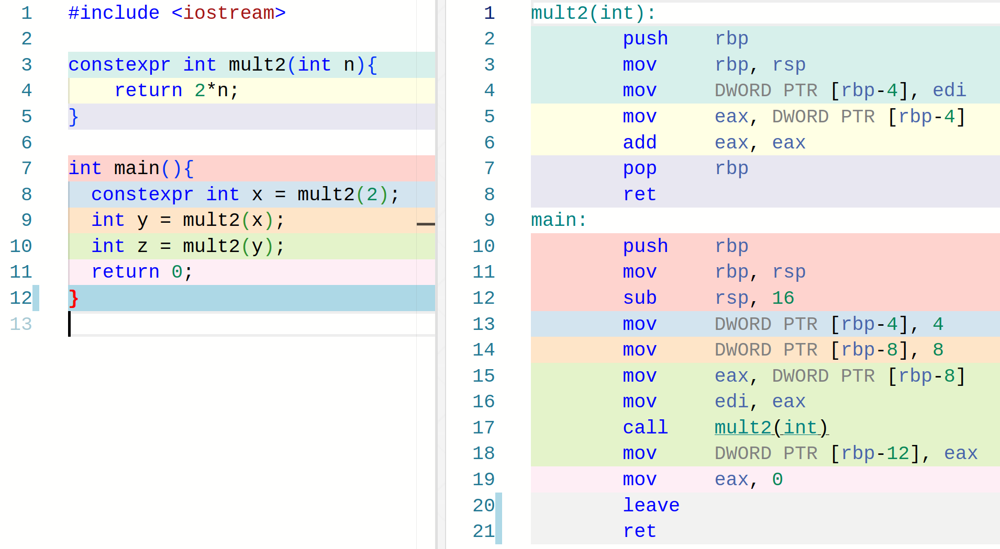
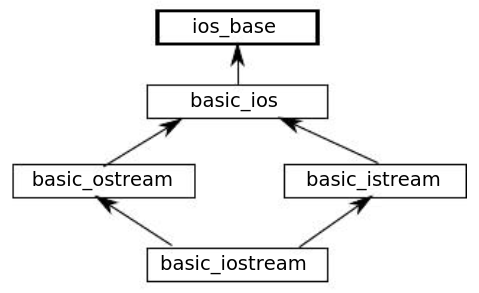

MK8BK's Technical Guides
This website is a fusion of a portfolio, a knowledge base and a blog.
Linux Command Line
A concise guide to tmux: Tmux.
Vim
operator number_of_repetitions motion
d3e
number_of_repetitions motion
3 j
Get rid of spell check in kickstart
LspUninstall typos_lsp
scripting
utilities
See this quick tmux guide.
clang-format <file.cpp> -i # format file in place
copy file to clipboard
$ xclip -sel c < input_file
C++ Notes
gcc
| Extension | File Type |
|---|---|
| .c | C source file |
| .cpp/.cc/.cxx | C++ source file |
| .o/.obj | Object file |
| .exe | Windows executable |
| no extension | Unix/Linux executable |
| .dll | Windows dynamic library |
| .lib | Windows static library |
| .so | Unix/Linux dynamic library |
| .a | Unix/Linux/MacOS static library |
| .dylib | MacOS dynamic library |
C
gcc -c x.c # compile c source file into x.o object file
gcc -c x.c y.c # compile c source files into x.o and y.o object files
gcc -o executable x.o y.o # link object files x.o and y.o into a single executable file
# compile and link source files x.c and y.c into a single executable file
gcc -o executable x.c y.c # intermediate object files are discarded
# compile and link source files x.c and y.c into a single executable file
# looks up any undefined symbols during linking in library named **libsomething**.
gcc -o executable x.c y.c -lsomething # -lABC -> search in libABC
# use the gcc preprocessor only
gcc -E in.c -o in.i
# see header file content
gcc -include stddef.h -E -dM - </dev/null | less
# check for memory leaks with valgring
valgrind --leak-check=yes ./program_name # if not in PATH and in working dir
C++
g++ -c x.cpp # compile cpp source file into x.o object file
g++ -c x.cpp y.cpp # compile cpp source files into x.o and y.o object files
g++ -o executable x.o y.o # link object files x.o and y.o into a single executable file
# compile and link source files x.cpp and y.cpp into a single executable file
g++ -o executable x.cpp y.cpp # intermediate object files are discarded
# compile and link source files x.cpp and y.cpp into a single executable file
# looks up any undefined symbols during linking in library named **libsomething**
g++ -o executable x.cpp y.cpp -lsomething # -lABC -> search in libABC
# specify C++ standard -> use -std=bruh flag
g++ -o prog main.cpp -std=c++2a # use c++ 20 with gcc, not fully implemented yet
debugging tip: undefined reference to smthg \(\rightarrow\) -o ALL.o files
C
A char type is always encoded using 8 bits (single byte) \(\rightarrow\)
just an integer type with a fixed range.
An int type usually has the same size as the processor's registers.
\[8=taille(char)\leq taille(short)\leq taille(int) \leq taille(long) \leq taille(long \ long)\]
Operations on integer types ALWAYS return integer types: 3/2 \(\rightarrow\) 1.
IEEE-764 floating point encodings (most frequently used):
| type | # bits | # digits of precision |
|---|---|---|
| float | 4 | 6 |
| double | 8 | 15 |
| long double | 10 | 18 |
If a literal contains a point or exponent (e or E), then it is a floating type.
Otherwise, it is an integer type.
To use a different number base (ie: not decimal), prefix with 0b for binary,
0x for hexadecimal and 0 for octal.
In C: 'A' is of type int, in C++: it is of type char.
printf("\a"); // produces a sound
By default, 2.3 is of type double.
To specify a literals type, use a suffix (or a combination for unsigned types):
| type | suffix |
|---|---|
| char | none |
| short | none |
| int | none |
| long | L |
| long long | LL |
| float | F/f |
| double | none |
| long double | L |
| unsigned int | U/u |
Addresses and Pointers Nonsense:
char u; // a character
char *pu; // a pointer to a character
char *ppu; // a pointer to a pointer to a character
u = 2; // assign the value of the literal 2 to u
pu = &u; // assign the address of u to pu
ppu = &pu; // assign the address of pu to ppu
// pointer dereference, lines 13, 14 and 15 have the same effect
int a = 2;
int *pa = &a;
int **ppa = &pa;
a = 0;
*pa = 0;
**ppa = 0;
The value of a pointer is an address.
Pointer to Function Example:
#include <stdio.h>
int f(int n){
return n/2;
}
int main(){
int (*fp)(int) = &f;
printf("%d\n", (*fp)(8));
return 0;
}
Always initialize a pointer.
int *p1 = 0 // the only allowed int to pointer assignment!
int *p2 = NULL // same
p1 = nullptr; // preferable in std>=C++11
Enumerated int constants:
enum {f, t}; // f: 0, t: 1
enum {f=10, t, d=2}; // f: 10, t: 11, d: 2
Constants and pointers
int const *ptr;
// ptr is a pointer to constant int -> can't modify the pointed variable with this pointer
int *const ptr = &x; // constant pointer --> needs initilization
// ptr is a constant pointer to int -> can't modify the address stored in this pointer
Prepend a variable declaration with the volatile keyword to inform the compiler
that the variable may change without being explicitly reassigned; this disables any
optimizations.
Never use volatile with const.
char x = 3;
x = ~x; // The bitwise complement operator (unary)
The binary bitwise AND & and OR | operators.
The binary bitwise XOR ^ operator.
int a = 1<<4; //The left-shift operator; left shift by 4, pad with 0's
// k<<n is equivalent to multiplying by 2^n
int a = 1>>4; //The right-shift operator; right shift by 4, pad with 0's
// k>>n is equivalent to dividing by 2^n
If a variable x is of type T, the expression &x is of type T*.
If a variable x is of type const T, the expression &x is of type const T *.
Increasing numeric size types:
char,short,int,long int,long long int.float,double,long double.
The unsigned versions have the same sizes.
void function(const int *p){
// this function won't use p to alter the pointed variable
// (which might or might not actually be const)
int j = *p;
*p = 0; // error
}
T a[s]; // an array `a` of size s and containing s elements with type `T`.
T a[s][s2]; // an array of arrays. contains s arrays each of size s2.
Array initialization:
int a[3] = {1, 2, 3};
int b[] = {1, 2, 3, 4};
double c[4] = {3}; // rest are set to zero
int d[4] = {[0]=3, [3]=3}; // rest are set to zero
char carr[] = "bruh";
String manipulation in C
#include <string.h>
char a[12] = "bruh";
int length = strlen(a); // length = 4, due to \0 terminated value in a
char b[12];
strcpy(b, "nonsense"); // copy into b
strcpy(a, b); // a now contains nonsense
strcpy(b, "no"); // b = "no"
strcat(b, " nonsense"); // b = "no nonsense"
strcmp(t1, t2); // -> ~ t1 codes - t2 codes
char a[20];
scanf("%s", a); // NOT &a
All these functions consider the null terminator as the end of the string.
Structs
struct structure_name {
member_declarations;
};
struct Color{
int red;
int green;
int blue;
};
struct Color b;
b.red = 0;
b.green = 0;
b.blue = 255;
struct Color *pb;
pb = &b;
(*pc).red = 255;
pc->red = 255; // the two lines are equivalent
struct Color c = {128, 200, 0};
struct Color c = {.red=128, .green=200, .blue=0};
struct Color d = c; // shallow copy (d.red = c.red, ...)
Unions (synonym for Useless)
union union_name{
member_declarations;
};
Can't return an array from a function.
do {
nonsense();
}while(!working());
Switch
switch (selector){ // an int expression
case val1: // an int expression available at compile time
instructions1
break;
case val2:
instructions2
break;
...
default:
default_instructions
break;
}
A switch selects the matching case in constant time.
Program arguments
int main(int argc, char *argv[]){
// ...
}
// is equivalent to
int main(int argc, char **argv){
// ...
}
argc is the argument count, including the program name
argv is the argument array, containing argc strings (char* delimited by \0)
Send a different exit code to the os.
#include <stdlib.h> // exit declaration
void procedure(){
exit(17); // equivalent to having an immediate return 17 in main()
}
int main(){
procedure();
// ...
return 0;
}
#define PI 3.0
// ... duh
#define STRUCTURE \
struct bruh\
{\
double x;\
double y;\
}
// <=>
#define STRUCTURE struct bruh {double x; double y;}
// macro with no value, boolean flag
#define INT32
// function like macro
#define MAX(a, b) a>b?a:b
// variadic macros
#define DEBUG(fmt, ...) fprintf(stdout, fmt, __VA_ARGS__);\
fflush(stdout)
To avoid operator precedence problems, wrap each macro formal parameter in parentheses.
NEVER USE AN OPERATION THAT PRODUCES SIDE EFFECTS AS A MACRO ARGUMENT. no idea how many times it will be called.
Macro names should ALWAYS be all uppercase.
#define bruh
#undef bruh
// undefine macro named bruh
#define LOGLEVEL 1
#if LOGLEVEL == 0
// ...
#elif LOGLEVEL == 1
// ...
// ...
#elif LOGLEVEL == 4
// ...
#else
// ...
#endif
#define M1 bruh
#define M2
#ifdef M1 // evaluates to true
// ...
#endif
#ifdef M2 // evaluates to true
// ...
#endif
#ifndef M3 // also evaluates to true
// ...
#endif
The conventional way to include header files, using header guards
// file: A.h
#ifndef A_H
#define A_H
//...
#endif
#if expression where
The expression is a constant expression, using only literals and identifiers, defined using #define directive. Any identifier, which is not literal, non defined using #define directive, evaluates to 0.
The # operator transforms a formal macro parameter into a string.
#define·DISPLAYCALC(x)·printf(#x·"·=·%d\n",·x)
// ...
int a = 4;
DISPLAYCALC(a); // prints: a = 4\n
DISPLAYCALC(a*a); // prints: a*a = 4\n
The ## operator concatenates two formal macro parameters or a formal macro parameter and a string.
int k; // both a declaration and definition
extern int j; // is a declaration but not a definition,
// j is defined in some other compilation unit.
double square(double x) {return x*x;} // is both a declaration and definition
double root2(double); // is a declaration but not a definition
To define a type alias, declare a variable of the desired type and prefix its declaration with typedef.
// intermediate step
char chess_board[8][8]; // models an 8x8 chess board, as a declaration
typedef char chess_board[8][8]; // is now a type alias, not a variable
// can now use it to declare variables
chess_board c1, c2;
For structures, take a similar approach
struct point {
int x, y;
};
struct point p; // intermediate step, variable
typedef struct point p; // final form of type alias
// can now declare variable using p instead of struct point
p point1, point2;
we can even combine the struct definition and alias
typedef struct point{
int x, y;
} p;
struct point p1; // is ok
p p1; // is also ok
More useful version with a single identifier consumed
typedef struct {
int x, y;
} p;
struct point p1; // NOOOOOO STOOOUUUPID
p p1; // is also ok
Parsing complex types
| operator | sentence | priority |
|---|---|---|
| [] | array of ... | highest |
| () | function returning ... | mid |
| * | pointer to ... | lowest |
int j = 3; // global variable is accessible to all functions
static int k = 3; // static variable is only accessible to functions in the same
// compilation unit ie same source file
char c = g() + 2; // NO, has to be a constant
char k = 'i' + 2; // Ok, know at compile time
int main(){
// ...
}
Pointer p + int k = Pointer pointing k positions after p
Pointer p - int k = Pointer pointing k positions before p
Pointer p1 - Pointer p2 = number of elements in between the pointed elements
(if homogenous, otherwise bruh)
(Pointer p1 < Pointer p2) evaluates to 0 or 1 (boolean result of numeric comparison)
int x[3];
// the following expressions are equivalent
x <==> &x[0];
x[i] <==> (&x[0])[i];
*x <==> *(&x[0]) <==> x[0];
*(x+i) <==> x[i]
int t[4];
int *pt = &t[0];
// the following expressions are equivalent
t[i] <==> pt[i] <==> *(t+i) <==> *(pt+i)
"an array identifier is a constant pointer to the first element of the array"
char *word[]; // array of pointers to char NOT pointer to array of char
dynamic memory management
// prototypes
void *malloc(size_t size);
void free(void *ptr);
void *realloc(void *ptr, size_t size);
#include <stdlib.h>
double *p;
int n = 30;
p = malloc(n*sizeof(double)); // in c void* can be assigned to a T*, in C++ NO
for(int i=0; i<n; i++) p[i] = 0.0; // can be used syntactically as an array
malloc may fail to allocate a block of memory, in which case it will return a null pointer.
ALWAYS CHECK FOR NULL POINTER AFTER A CALL TO malloc.
int *p = malloc(20*sizeof(int));
if(p==NULL){
// fix it ... or fail catastrophically
}else{
// go ahead
}
free(p); // free the allocated block
int *p = malloc(20*sizeof(int));
// use, then find out it had an inappropriate size
p = realloc(p, 30*sizeof(int));
// yay, new size
realloc check-list:
- allocate new block with the appropriate size (if no expansion possible)
- copy data from the old block to the new (if could not just expand old block)
- free the old block (if changed)
- return pointer to the first element of the new block (if different)
realloc safety
double *realloc_safe(double *p, size_t newsize, int *ok){
*ok = 1; // all is good for now
int *q = realloc(p, newsize);
if(q) p = q;
else *ok = 0; // not good, inform the caller
return p;
}
these checks insure that p is always a valid pointer regardless of the success of the reallocation.
Advice:
- DO NOT TRY TO INFER THE SUCCESS OF THE OPERATION BY COMPARING THE NEW AND OLD POINTER ADDRESSES. A SUCCESSFULL REALLOCATION CAN KEEP THE SAME ADDRESS.
- ALWAYS FREE ALLOCATED BLOCKS
- NEVER USE A POINTER AFTER FREEING ITS POINTED BLOCK
- NEVER FREE MORE THAN ONCE (including realloc with 0 size)
- NEVER ACCESS MEMORY BEYOND THE ALLOCATED LIMIT (even worse than array out of bound access)
// Generate all permutations of an array
#include <stdio.h>
void swap(int *a, int *b){
int t = *a;
*a = *b;
*b = t;
}
void printarray(int n, int *a){
for(int i=0; i<n; i++)
printf("%d ", a[i]);
printf("\n");
}
void auxperm(int n, int k, int *a){
if(n==k) {printarray(n, a); return;}
for(int i=k; i<n; i++){
swap(a+i, a+k);
auxperm(n, k+1, a);
swap(a+i, a+k);
}
}
void perm(int n, int *a){
auxperm(n, 0, a);
}
int main(){
int n = 5;
int a[n];
for(int i=1; i<=n; i++) a[i-1] = i;
perm(n, a);
return 0;
}
typedef const char *(*txtptr)(double);
txtptr is the type "pointer to function taking a double and returning a
pointer to a constant char".
assert(("message", expr)); // efficient use of the comma operator
C function name nonsense
#include <stdio.h>
void printchar(char c){
printf("%c", c);
}
int main(){
printchar('M'); // prints: M
(*printchar)('M'); // compiles, prints: M
printf("\n");
return 0;
}
Functions readily decay into pointers to themselves, see more on
reddit
.
staticrap
void foo() {
static int x = 5; // assigns value of 5 only once, at compile time
x++;
printf("%d", x);
}
int main() {
foo(); // x = 6
foo(); // x = 7
return 0;
}
See more on StackOverflow.
#include <stdio.h>
int main() {
int nv[] = {1, 2, 3};
// common idiom to get the number of elements in an array in c
int n = sizeof(nv) / sizeof(*nv);
printf("%d\n", n); // prints: 3
return 0;
}
C++
In C++, a true bool type is available with only true and false values.
In C, 'x' and '\n' are of type int. In C++, they are of type char.
Can decorate 1000000 as 1'000'000.
| C header file | C++ header file |
|---|---|
assert.h | cassert |
ctype.h | cctype |
errno.h | cerrno |
float.h | cfloat |
limits.h | climits |
math.h | cmath |
stdarg.h | cstdarg |
stddef.h | cstddef |
stdint.h | cstdint |
stdio.h | cstdio |
stdlib.h | cstdlib |
string.h | cstring |
time.h | ctime |
Use C function in C++, if function is a common library function or was compiled by a c compiler.
// in.c
#include <stdio.h>
void my_printer(char *s){
printf("%s\n", s);
}
compile with
gcc -c in.c
// extern.cpp
#include <iostream>
extern "C" double sin(double);
extern "C"
{
double cos(double);
double tan(double);
void my_printer(char*);
}
int main(){
std::cout << sin(1.0) << std::endl;
std::cout << cos(1.0) << std::endl;
std::cout << tan(1.0) << std::endl;
char a[] = {'c', ' ', 'c', 'o', 'd', 'e'};
my_printer(a);
return 0;
}
compile with
g++ -o extern extern.cpp in.o
In C++ a function can be oveloaded: same name, different signatures and definitions.
If an overloaded function can handle int and double arguments, a compiler
error occurs if it is invoked on a long value \(\rightarrow\) the compiler
can't know to which type it should cast the long. Do an explicit cast.
Formal paramaters having default values should only be present in the function declaration. They should not be followed by formal parameters having no default values.
A namespace declaration can only contain declarations and no definitions, use extern for namespace variable to avoid defining it and breaking the One Definition Rule.
Extracting namespace component for use inside of a single compilation unit.
// ...
y = Math::power(x, 3)*Math::pi;
becomes
using Math::power;
using Math::pi;
// ...
y = power(x, 3)*pi;
Extracting all namespace components, USE ONLY IF A FEW NAMESPACES ARE USED.
using namespace Math;
Explicitly use a function in the globale namespace (ie: not declared in any namespace)
#include <cstdio>
int main(){
::printf("bruh\n");
return 0;
}
Anonymous Namespaces can only contain definitions (any declarations cannot be accessed bruh). These definitions can only be used in the current compilation unit.
namespace {
int f(n) {return n*n;}
}
has the same effect as
static int f(n) {return n*n;}
all references must be initialized
double x, y;
double &r = x; // r is a reference to the variable x
r = y; // the variable x now contains the value of the variable y
Never return a reference to a local variable or to a parameter not passed by reference (ie passed by value).
// OK
double& maximum(double& a, double& b){
return (a>=b)?a:b;
}
// STOOPID
double& maximum(double a, double b){
return (a>=b)?a:b;
}
A lot to unpack, but the common idiom is to declare a function receiving const references and returning a const reference, and an overloaded version which receives non const references and returns a non const reference.
double& maxi(double& a, double& b){
return (a>b) ? a : b;
}
const double& maxi(const double& a, const double& b){
return (a>b) ? a : b;
}
a reference must always be initialized or declared extern (initialized in an other compilation unit).
double& r1; // NOOOOO
extern double& r2; // OK, make sure it's defined elsewhere
"References behave like constant pointers who are automatically dereferenced"
auto i = ... ; // let the compiler deduce the appropriate type
decltype(expr) j = ... ; // declare the variable j as having the same type as expr
use using instead of typedef in C++
using txtptr = const char * (*) (double);
using y = x; // y is the new (hopefully more intuitive) name for the type x
Use nullptr (of type nullptr_t) instead of 0 or NULL.
Favor the four kinds of modern C++ casts to standard C casts.
static_cast<new_type>(expr); // use for numeric types
const_cast<new_type>(expr); // get something non constant or non volatile
reinterpret_cast<new_type>(expr); // use for pointer cast, often nonsensical
dynamic_cast<new_type>(expr); // stoopid oop nonsense
A function whose result is declared to be constexr can be evaluated at compile time if its arguments are const, constexpr or litterals.

consteval - specifies that a function is an immediate function, that is,
every call to the function must produce a compile-time constant.
Conditionally compile with if constexpr(expr) where expr is an expression
known at compile time.
static_assert(expr, "message"); // expr must be evaluated at compile time
double a[30];
for(double x : a)
x = 0; // STOOPID, x is a copy of an element of a
for(double& x : a)
x = 0; // OK, will modify, since x references an element of a
// if large elements, and no modification needed, favor a constant reference
for(const double& x : a) // or const auto&
std::cout << x;
double *p;
p = new double; // uninitialized
double *x = new double(5); // initialized to value 5
double *y = new double{6}; // initialized to value 6
double *z = new double(); // initialized to 0
double *p = new double[n]; // pointer to first element of
// array dynamically allocated
double *p = new double[3]{1.0, 3.0, 3.0}; // initialized version
delete p; // ok
double *q = reinterpret_cast<double*>(malloc(sizeof(int)));
delete q; // NOOOOO, STOOPID
Anything declared with new[] must be deleted with delete[].
U.B. .
If a type T aliases an array type, any allocated new T must be unallocated
with delete[]
class TClass {
private:
// ... //
protected:
// ... //
public:
// ... //
}
// if absent, private
// can repeat sections
In C, struct X declares a type struct X, in C++ it declares a type X
(similar to class X).
Always place class declaration in .h header file with the same name as the
class, place the implementation in a .cpp file with the same filename.
this is a constant pointer to the object, it is automatically added to member
methods by compilers.
For a setter, returning *this allows method chaining.
class T{
public:
RT method(params) const; // this method won't modify the object
};
If a method does not modify its calling object, declare it const.
A const method cannot call a non const method. It can however call a static
method.
Functions who are friends of a class can access all fields and methods of this class.
Inline functions must be declared and defined (below) in header files. The compiler needs the definition.
A method defined in the class declaration is implicitly inline.
Inline functions can't be recursive.
The default constructor is invoked automatically if an object is not initialized.
If fields are initialized (using constants), the default constructor and all other constructors will not have to initialize the fields. (... helpfull)
If a constructor with parameters exists, the compiler won't provide the default parameterless constructor. To specifically request it, use:
class S{
public:
S() = default; // request the default parameterless constructor
};
class X{
public:
X(const X& x); // cloning constructor
};
X x;
X y(x); // same as
X y = x; // this
X y{x}; // same as
Always provide a cloning constructor for classes that have dynamically allocated
fields (pointers, new nonsense ... etc). A cloner for class T has T(const T&)
for a signature.
class Z{
// assumed to have a parameterless AND a cloning constructor
// assumed to be assignable: Z z1, z2; ...; z1 = z2;
};
class X{
private:
int k_;
Z z_;
X(int k, const Z& z); // constructor
};
// NO, STOOPID
X::X(int k, const Z& z){
k_ = k;
z_ = z; // here z_ is initialized first with the parameterless constructor
// it is then reaffected using the cloning constructor
}
// CHAD
X::X(int k, const Z& z):k_(k), z_(z){ // call the cloning constructor first
}
class C{
public:
~C(); // Destructor
};
the delete operator calls the destructor before freeing the memory dynamically
allocated with new.
The expression
const_cast<T>(v)can be used to change theconstorvolatilequalifiers of pointers or references. (Among new-style casts, onlyconst_cast<>can remove const qualifiers.)Tmust be a pointer, reference, or pointer-to-member type.
If an object can have multiple equivalent physical representations, consider
using the mutable qualifier on fields that should be modifiable even if the
object is declared const.
mutable vs const_cast<...>(this) : EPIC FIGHT
const_cast: make all fields modifiable, just nowmutable: permits modification of the class member declared mutable even if the containing object is declared const.
Operators that cannot be overloaded: ::, .*, ., ?:, sizeof.
=, [], (), ->: always overload these operators with methods.
T& operator=(const T&); is the proper signature for the overloaded assignement
operator.
ostream& operator<<(ostream&, const T&) is the (only) proper signature for
the overloaded << operator.
istream& operator<<(ostream&, T&) is the (only) proper signature for
the overloaded >> operator.
Call a method from within these two overloaded operators; this allows for subclasses to define their own standards for stream operations \(\rightarrow\) polymorphism.
x[j] is equivalent to x.operator[](j)
explicit specifies that a constructor is explicit, that is, it cannot be
used for implicit conversions and copy-initialization.
To convert an instance of class T into an instance of type X:
T t;
X x;
x = t; // is equivalent to
x = t.operator X(); // this
T.operator X() // -> convert the instance of type T into an equivalent instance of type X
class A
{
public:
int x;
protected:
int y;
private:
int z;
};
class B : public A
{
// x is public
// y is protected
// z is not accessible from B
};
class C : protected A
{
// x is protected
// y is protected
// z is not accessible from C
};
class D : private A // 'private' is default for classes
{
// x is private
// y is private
// z is not accessible from D
};
Constructors are never inherited.
Always call the parent constructor in the inherited constructor.
class Y{
private:
T1 t1_;
public:
Y(T1 t1);
};
Y::Y(T1 t1){
t1_ = t1;
}
class X : public Y{
private:
T2 t2_;
public:
X(T1 t1, T2 t2);
};
X::X(T1 t1, T2 t2) : Y(t1){
t2_ = t2;
}
// multiple inheritance
class Child: public parent1, private parent2 {};
A pointer (or reference) to class T used to call method m()
uses the definition of m in the class T, even if the pointed instance is of
a subclass of T which overrides m.
#include <iostream>
using namespace std;
class X {
public:
void do_smthg();
virtual void do_smthg_else();
};
class Y : public X{
public:
void do_smthg();
void do_smthg_else() override;
};
void Y::do_smthg(){
cout << "y do\n";
}
void Y::do_smthg_else(){
cout << "y do\n";
}
void X::do_smthg(){
cout << "x do\n";
}
void X::do_smthg_else(){
cout << "x do\n";
}
int main(){
X *a[3];
a[0] = new Y();
a[0]->do_smthg(); // x do: static dispatch
a[0]->do_smthg_else(); // y do: dynamic dispatch
return 0;
}
use virtual on base type, virtual or preferrably override on the child
type.
static methods (class methods) and constructors cannot be virtual.
A call to a virtual method in the constructor of a base class uses the definition of the method in the base class. Avoid calling virtual methods in a constructor.
If polymorphism is used, USE A VIRTUAL DESTRUCTOR. Why ? Because.
If you have a virtual function that is not abstract, then you must implement it.
To declare a method abstract:
virtual qualifiers returntype method(params) qualifiers = 0;
// also called pure virtual method
A class having at least one abstract method is considered abstract, it can't be instanciated (incomplete class).
An interface is a class that only contains pure virtual methods.
A destructor can be declared virtual (10.3) or pure virtual (10.4); if any objects of that class or any derived class are created in the program, the destructor shall be defined. If a class has a base class with a virtual destructor, its destructor (whether user- or implicitly-declared) is virtual.
The destructor of a base class is always called from the destructor of the derived class, even if it is declared virtual pure. It must always be implemented.
An abstract subclass of an abstract class can implement part of a virtual pure method, and still declare it virtual pure; its subclasses can then call its implementation in their (hopefully) final implementation. Still, DECLARE IT VIRTUAL PURE.
If a method is supposed to override a virtual method in a base class, use the
override keyword, this way if the method signatures don't match (forgot
const for example), there will be a compile time error.
To overload a method in a base class, reinject it into the scope
using Base::method;.
See unqualified name lookup in
StackOverflow
and cppreference.
Templates
template <int k, typename R, typename T>
T f(R){
for(int n=0; n<k; k++)
// ...
}
either a type T or int param or bool param. can also be used for a class.
template default values
template <int d, typename NT> // ok
class X{
// ...
};
template <int d, typename NT=double> // ok
class X{
// ...
};
template <int d=3, typename NT=double> // ok
class X{
// ...
};
X<> ; // ok
X<2> ; // ok
X<2,double> ; // ok
X<,double> ; // no
template <int d=3, typename NT> // NOOOO
class X{
// ...
};
Stack allocated objects created within a try bloc before an exception is thrown are automatically deleted. (NOT tru for dynamically allocated objects with new).
try{
int k;
std::cin >> k;
if(k<0)
throw k;
else if(k==0)
throw std::exception;
}catch(int i){
// if exception is of type int, execute this and jump after all catch blocks
}catch(std::exception e){
}
Standard Exceptions are in the header <stdexcept>,
they all inherit from std::exception.
Favor using exception classes instead of string and numeric constants in catch block parameters. (create classes that inherit from the std::exception class).
- An exception forces calling code to recognize an error condition and handle it. Unhandled exceptions stop program execution.
- An exception jumps to the point in the call stack that can handle the error. Intermediate functions can let the exception propagate. They don't have to coordinate with other layers.
- The exception stack-unwinding mechanism destroys all objects in scope after an exception is thrown, according to well-defined rules.
- An exception enables a clean separation between the code that detects the error and the code that handles the error.
try{
executeProgram();
}catch(...){ // universal exception handler, catch all exceptions, unknown
prepareProgramStop();
}
// some dynamic memory is allocated
// some exception is thrown
catch(...){
// deallocate memory
throw; // rethrow the exception
}
class X{
public:
X(const X&) = delete; // don't allow copy constructor
};
See StackOverflow
for more details on method = delete.
See Resource Acquisition is initialization (RAII) on wikipedia.
// careful, slicing: will only get base type and message
catch(std::exception e)
catch(const std::exception e)
// ok, virtual message, no slicing
catch(const std::exception& e) // favor using const reference -> no slicing
The catch exception handlers are examined in order when an exception is
thrown in the try block; as soon as one has a matching parameter type (even
if superclass), its block is executed. The other catch blocks are all skipped
, even when the parameters match. ORDEEEER!
Throwing an exception should never cause a memory leak, use RAII.
IOS INBREEDING

std::cout, std::cerr and std::clog are all instances of std::ostream,
ie: std::basic_ostream<char>.
std::cin is an instance of std::istream,
ie: std::basic_istream<char>.
A stream can have four (non exclusive) states: fail, good, bad and eof.
- fail: error, but no data loss, cant read or write from now on
- bad: error, with data loss, cant read or write from now on
- eof: end of stream encountered, not an error, but cant read or write from now on
- good: good ... (duh)
a stream is automatically cast to a bool using !fail(). It is considered
true if the last IO operation succeded.
while(std::cin){ // while the last input was successful <==> !(std::cin.fail())
// continue processing
}
Force stream state
std::cin.clear(std::ios_base::failbit);
std::cin.clear(std::ios_base::badbit);
std::cin.clear(std::ios_base::eofbit);
std::cin.clear(); // defaults to std::ios_base::goodbit
A stream's openmode is of type std::ios_base::openmode. It is a bitmask type
ie: can be combined with |;
ex: (ios_base::in | ios_base::out | ios_base::binary )
See cppreference for
more information.
Input Stream Methods
-
std::ios_base::appcomes from 'append' - all output will be added (appended) to the end of the file. In other words you cannot write anywhere else in the file but at the end. -
std::ios_base::atecomes from 'at end' - it sets the stream position at the end of the file when you open it, but you are free to move it around (seek) and write wherever it pleases you.
More details on openmodes.
is::get(char &)-> get a char from a stream. returns the stream. Does not ignore non printable chars.is::unget()-> last char read is put back in the buffer, as if it was never read also returns the stream.is::putback(char_type)-> char parameter is put in the buffer, also returns the stream.is::peek()-> returns the next character in the stream, does not read it.getline(input_stream, string_storage, delimiter)-> reads until delimiter or EOF and writes into string until length is reached. seecppreference.is::read(char* storage, count)-> reads and stores into storage until count or EOF is reached. Seecppreference.basic_istream& ignore(std::streamsize count=1, int_type delim=Traits::eof());bruh look it up.
Some input streams (non interactive ones, unline std::cin) support positioning
with the tellg() and
seekg(pos | offset, seekdir)
functions.
seekdir can be ios_base::beg, ios_base::end or ios_base::cur.
Positioning often requires a stream to be open in std::io_base::binary.
std::ifstream follows RAII idiom, its constructor takes a file name as a string
and an optional (default = std::ios_base::in) std::ios_base::openmode;
see more on cppreference.
The rdbuf() method returns a pointer to the stream_buffer associated with the
basic_ios.
cppreference.
#include <fstream>
#include <iostream>
int main(){
std::ifstream dat("test.dat", std::ios_base::in | std::ios_base::binary);
std::cout << "ifstream rdbuffer is open? " << dat.rdbuf()->is_open() << std::endl;
dat.rdbuf()->close();
std::cout << "ifstream rdbuffer is open? " << dat.rdbuf()->is_open() << std::endl;
return 0;
}
The void open( const char* filename,std::ios_base::openmode mode=std::ios_base::in)
method opens and associates the file with name filename with the file stream.
See cppreference for more
details.
The void close() method of ifstream closes the associated file.
This function is called by the destructor of basic_fstream when the stream
object goes out of scope and is not usually invoked directly.
cppreference.
The method bool is_open() checks if the file stream has an associated file.
cppreference.
Used to ckeck if a file opened for reading exists.
The global getline() function works with C++ std::string objects. The istream::getline() methods work with "classic" C strings (pointers to char).
Use istringstream
to convert a string into an objet whose class supports the >> operator.
istringstream::str()
returns a copy of the underlying string.
#include <iostream>
#include <sstream>
int main(){
std::string s1 = "1 2";
std::istringstream is(s1);
// obtain string in the input string stream
std::cout << is.str() << std::endl; // prints: 1 2
// change string in the input string stream
std::string s2 = "3 4";
is.str(s2);
int a, b;
is >> a >> b; // read input string stream
std::cout << "a=" << a << " b=" << b << std::endl; // prints: a=3 b=4
return 0;
}
istringstream supports
positioning with seekg(...)
and tellg().
Similarly to istream,
ostream
can handle 3 kinds of operations:
- formatted (output) with
<< - unformatted (output) with
putandwrite(char*, count) - positioning with
tellp()andwrite(pos | offset, seekdir)
ofstream
has a destructor that automagically closes the associated file \(\rightarrow\)
RAII. A useful constructor is
ofstream(filename, openmode).
ofstream
also has the usual
rdbuf,
open,
close and
is_open
methods.
Use ostringstream
to convert an objet whose class supports the << operator into a string.
Its constructor takes a char sequence and an openmode
(default is ios_base::out). Its
str method
manages the contents of the underlying string object, that object can be changed
through it.
The str method
comes is overloaded:
- one version (<=3) returns a copy of the string associated with the ostringstream.
- another version (>=4) can copy a string into the internal
stringbuf.
#include <iostream>
#include <cmath>
#include <sstream>
template <typename T>
std::string toString(const T& x){
std::ostringstream os(std::ios_base::app); // append to file
std::string buf = "*"; // arbitrary prefix to show the effect of append mode
os.str(buf);
os << x;
return os.str();
}
int main(){
std::string pi_str = toString(std::acos(-1.0));
std::cout << "PI=" << pi_str << std::endl; // PI=*3.14159
return 0;
}
Some important io manipulators in <ios>
#include <iomanip>
#include <ios>
#include <iostream>
#include <sstream>
int main() {
bool v = true;
// boolalpha , noboolalpha
std::cout << std::boolalpha << v << " " << std::noboolalpha << v << std::endl;
v = false; // print: true 1
std::cout << std::boolalpha << v << " " << std::noboolalpha << v
<< std::endl; // print: false 0
// showbase, noshowbase, dec, hex, oct
std::cout << std::showbase;
std::cout << std::dec << 15 << " " << std::hex << 15 << std::oct << " " << 15
<< std::endl; // prints: 15 0xf 017
std::cout << std::noshowbase;
std::cout << std::dec << 15 << " " << std::hex << 15 << std::oct << " " << 15
<< std::endl; // prints: 15 f 17
// showpoint, noshowpoint
double d = 33.0, q = 33.1;
std::cout << std::showpoint << d << " " << std::noshowpoint << d << " " << q
<< std::endl; // prints: 33.0000 33 33.1
// showpos, noshowpos
double pi = 3.14159;
std::cout << std::showpos << pi << " " << 0.0 << " " << std::noshowpos << pi
<< std::endl; // prints: +3.14159 +0 3.14159
// skipws, noskipws
char c1, c2, c3;
std::cout << "type>";
std::cin >> std::skipws >> c1 >> std::noskipws >> c2 >>
c3; // type: <space> A <space> B
std::cout << std::hex << std::showbase << static_cast<int>(c1) << " "
<< static_cast<int>(c2) << " " << static_cast<int>(c3)
<< std::endl; // prints: 0x41 0x20 0x42
// scientific, fixed, defaultfloat, hexfloat
double x = 0.00002;
std::cout << std::fixed << x << std::endl; // prints: 0.000020
std::cout << std::scientific << x << std::endl; // prints: 2.000000e-05
std::cout << std::defaultfloat << x << std::endl; // prints: 2e-05
std::cout << std::hexfloat << x << std::endl; // prints: 0x1.4f8b588e368f1p-16
// uppercase, nouppercase
double y = 300.1234;
int k = -559038737;
std::cout << std::scientific << std::hex;
std::cout << std::uppercase << y << " " << k
<< std::endl; // prints: 3.001234E+02 0XDEADBEEF
std::cout << std::nouppercase << y << " " << k
<< std::endl; // prints: 3.001234e+02 0xdeadbeef
// std::setfill, std::left, std::right and std::internal
std::cout << std::hex << std::showbase;
std::cout << std::setfill('#') << std::setw(12);
std::cout << std::left << 24 << std::endl; // prints: 0x18########
std::cout << std::setfill('#') << std::setw(12);
std::cout << std::right << 24 << std::endl; // prints: ########0x18
std::cout << std::setfill('#') << std::setw(12);
std::cout << std::internal << 24 << std::endl; // prints: 0x########18
// std::ws
char c4, c5;
std::cout << "type>";
std::cin >> std::skipws >> c4 >> std::noskipws >> std::ws >>
c5; // type: <space> A <space> B
std::cout << std::hex << std::showbase << static_cast<int>(c4) << " "
<< static_cast<int>(c5) << std::endl; // prints: 0x41 0x42
// std::ends
std::ostringstream os;
os << "AAA" << std::ends << "BBB" << std::ends << "CCC" << std::ends
<< std::flush; // make c style strings
std::string s = os.str();
for (auto c : s)
std::cout << std::hex << std::showbase << static_cast<int>(c) << " ";
// prints: 0x41 0x41 0x41 0 0x42 0x42 0x42 0 0x43 0x43 0x43 0
std::cout << std::endl;
return 0;
}
unitbuf/nounitbuf
enables or disables automatic flushing of the output stream after any
output operation.
The oracle at stackoverflow informs us
that cerr/wcerr default to
unitbuf. You do want to see the errors if a crash happens.
What's the difference between ws and skipws ?
🔮
-
skipwsenables or disables skipping of leading whitespace by the formatted input functions. -
wsdiscards leading whitespace from an input stream \(\rightarrow\)unformatted input function
<ostream> declares 3 manipulators:
flushflushes the stream ie: writes all unwritten data on the stream buffer to the peripheral (file, string, whatever else),unitbufperforms a flush after each operation.endlinserts a newline character into the output stream and flushes it.endsinserts a null character into the output stream, does not flush.
setw(n)
(declared in <iomanip>) specifies that the next operation should use a width n.
If write: shorter than n will be padded with the filler char set by
setfill, longer won't be troncated.- If read: shorter than
nis read entirely, longer is troncated (unless numeric).
setbase
sets the numeric base of the stream.
setfill is self
explanatory ... bruh.
setprecision
set the precision used to write or read floating point types, see the page
reference examples.
Formatted io for basic types is symmetic: a value written with << can
be read with >> (without loss of information). The only exception is the string
class: the << operator writes the whole string, but the >> operator only
reads a word into the string.
The quoted
allows insertion and extraction of quoted strings,
such as the ones found in csv, json or xml.
#include <iomanip>
#include <iostream>
int main(){
std::string s, q = "c++ is fabulous";
std::stringstream flow;
flow << q;
flow >> s;
std::cout << s << std::endl; // prints: c++
std::stringstream qflow; // implicit "
qflow << std::quoted(q);
qflow >> std::quoted(s);
std::cout << s << std::endl; // prints: c++ is fabulous
std::stringstream bflow;
bflow << std::quoted(q, '|');
bflow >> std::quoted(s, '|');
std::cout << s << std::endl; // prints: c++ is fabulous
std::stringstream xflow;
xflow << std::quoted(q, '<', '>');
xflow >> std::quoted(s, '<', '>');
std::cout << s << std::endl; // prints: c++ is fabulous
return 0;
}
To create a paramterless output manipulator use the 18-20 overload
of the <<
operator of the basic_ostream class.
// prototype
std::basic_ostream& operator<<(
std::basic_ostream<CharT, Traits>& (*func)
(std::basic_ostream<CharT, Traits>&) );
// so if a function manip is declared as
std::ostream& manip(std::ostream&);
// the expression
flow << manip; // is equivalent to
manip(flow);
Example:
#include <iostream>
#include <ostream>
template<typename C, typename T>
std::basic_ostream<C,T>& compilation_date(std::basic_ostream<C,T>& os){
return os << __DATE__ << " " << __TIME__ << std::flush;
}
int main(){
std::cout << "Version : " << compilation_date;
std::endl(std::cout); // equivalent to
std::cout << std::endl;
return 0;
}
Left and right shift nonsense
std::cout << (4<<2) << std::endl; // equivalent to 4 * 2^2
std::cout << (8>>2) << std::endl; // equivalent to 8 / 2^2
Lambda expressions in C++: C++11 onwards
- the return type is automatically is automagically deduced by the compiler.
auto f = [](const char *s=" default\n"){std::cout << 42 << s << std::endl;};
f(); // prints: 42 default
f(" not default"); // prints: 42 not default
[](int n){std::cout << n << std::endl;}(32); // prints: 32
Use decltype(name) to get the type of a lambda function named name (often
declared auto). Two lambda expressions, even if having the exact same definitions
don't have the same type. In a generic context, we need to name a lambda expression
to use its type as a template parameter.
Starting from C++17, the compiler can infer the template parameters of an instance from the types of the constructor real parameters. So can do dis:
auto lam = [](int n){return 2*n};
Feval<int, decltype(lam)> f(2, lam);
Feval f(2, lam); // works and is equivalent to
Feval f(2, [](int n){return 2*n;}); // dis
Starting from C++14, lambda parameters can be auto: works as if there was
a generic type for each auto parameter.
auto maxi = [](auto a, auto b){
if(a>b) return a; else return b;
};
std::cout << maxi(1, 3) << std::endl; // prints: 3
std::cout << maxi(1, 0) << std::endl; // prints: 1
std::cout << maxi('a', 'c') << std::endl; // prints: c
std::cout << maxi(1, 3.14) << std::endl; // does not compile
// maxi would have to return either a or b of type int or double -- incompatible
// " Inconsistent types 'double' and 'int'
to force a lambda to return a type:
auto maxi = [](auto a, auto b) -> decltype(a) {
if(a>b) return a; else return b;
};
std::cout << maxi(1, 3.14) << std::endl; // now compiles and prints: 3
Other example
auto div3 = [](int n=3) -> bool {
return n%3==0;
};
std::cout << div3() << std::endl; // prints: 1
std::cout << div3(43) << std::endl; // prints: 0
A lambda can access all global and static local variables in the scope in
which it is defined. To capture a (nonstatic!) variable in the local context,
use the [] operator to specify what local entities to capture:
#include <iostream>
int main() {
int x = 1, y = 2, w = 3;
auto impure = [=]() {
std::cout << x << std::endl;
}; // total capture, can use x, y, w and any variable defined in main are
// accessible to impure
impure(); // prints: 1
auto heathen = [w, y](int k = 0) {
std::cout << w + k << y + k << std::endl;
}; // selective capture, can only use w, y and global or static local
// variables.
heathen(2); // prints: 54
// auto stoopid = [x, w]() {
// return x + y;
// }; // has no access to y, so skoozy no compilo, no habla ingles
x = 3;
impure(); // prints: 1
// x was captured with value 1, at the definition of impure, not at this call
auto smort = [k = x, n = y]() {
std::cout << k << n << std::endl;
}; // rename param
smort(); // prints: 3
auto modx = [&]() { x = 7; }; // total reference capture, can modify all
// variables in the calling context.
std::cout << x << std::endl;
modx(); // modifies x
std::cout << x << std::endl;
int nonsense1 = 2, nonsense2 = 1;
auto affine = [&a = nonsense1, &b = nonsense2](int x) {
return a * x + b;
}; // selective reference capture with renaming
std::cout << affine(0) << std::endl; // prints: 1
std::cout << affine(3) << std::endl; // prints: 7
return 0;
}
Reference captures can cause UB.
double *nonsense = new double(3);
auto mulNonsense = [&a = *nonsense](double x) { return a * x; };
std::cout << mulNonsense(4.0) << std::endl; // prints: 12.0
delete nonsense;
std::cout << mulNonsense(4.0)
<< std::endl; // UB, dangling reference used in lambda
Avoid three things with lambdas:
- functions that return lambdas that capture by reference any elements of the function context.
- a lambda capturing references of the current context is stored for futher use
(using the generic
functionwrapper for example). - thread shenanigans with lambdas capturing by reference.
// an example of a mixed capture
#include <iostream>
int main() {
int x = 32, y = 3;
std::cout << "x=" << x << " y=" << y << std::endl; // prints: x=32 y=3
[&a = x, b = y]() { a = b;}();
std::cout << "x=" << x << " y=" << y << std::endl; // prints: x=3 y=3
return 0;
}
An example of relevant uses of lambdas:
#include <iostream>
// the common reduce function common in the functional paradigm
// T is a type, BinF is a callable object with the parameters (T,T) which return a T
template <typename T, typename F>
// init is the initial value, list contains the other values in the calculation
T reduce(T list[], int n, T init, F f) {
for (int i = 0; i < n; i++){
init = f(init, list[i]);
}
return init;
}
int main() {
int v[] = {1, 2, 3, 4, 5, 6, 7, 8};
int nv = sizeof(v) / sizeof(*v); // number of values in v
int r1 = reduce(v, nv, 0, [](int a, int b) { return a + b; });
// performs summations, prints: 36
int r2 = reduce(v, nv, 1, [](int a, int b) { return a * b; });
// performs products, prints: 40320
int r3 = reduce(v, nv, 0, [](int a, int b) { return a ^ b; });
// performs consecutive xor's (checksum), prints: 8
std::cout << r1 << " " << r2 << " " << r3 << std::endl;
return 0;
}
Let M > N and f be a function of M parameters. Currying is the
process of creating a function g of N parameters by fixing M-N parameters
in f.
example:
#include <iostream>
int main() {
// lambda returning lambda
auto in = [](auto min, decltype(min) max) {
return [min, max](decltype(min) valeur) -> bool {
return valeur >= min && valeur <= max;
};
};
auto lowercase = in('a', 'z');
std::cout << std::boolalpha << lowercase('v') << std::endl; // prints: true
std::cout << lowercase('V') << std::endl; // prints: false
auto proba = in(0.0, 1); // is a valid probability value
std::cout << proba(2) << std::endl; // prints: false
std::cout << proba(0) << std::endl; // prints: true
std::cout << proba(1) << std::endl; // prints: true
std::cout << proba(0.4) << std::endl; // prints: true
return 0;
}
The Standard Template Library contains
- Algorithms
- Containers (~15 class templates)
- Iterators
std::list implements a
bidirectional linked list.
An iterator is a pointer-like object used to cycle through all
the elements stored in a container.
Iterators are a standard way to access a container. Each container type X
provides a type X::iterator to access its elements. The begin() method
returns an iterator that points to the first element of the container. Its value
can be accessed by using the * operator as if it was a pointer dereference.
The ++ operator applied (suffix or prefix) to an iterator goes to the next
element in the container.
ITERATORS ARE NOT POINTERS.
All containers offer at least the begin() and end() methods.
Careful, The end() method returns an iterator to the element
following the last element, not the last element.
NEVER DEREFERENCE THE OPERATOR RETURNED BY end().
However, one can compare that iterator with another iterator of the same type and pointing to an element of the same container.
We can iterate through a container by using an iterator that goes through \([c.begin(), c.end()[\)
Application
#include <iostream>
#include <list>
#include <vector>
template <typename C> void displayAll(C &c) {
// C::iterator it; // does'nt work, compiler does'nt know that C::iterator is
// a type and not a member of class C
typename C::iterator it; // specify explicitly that C::iterator is a type, and
// declare it to be of that type
for (it = c.begin(); it != c.end(); it++)
std::cout << *it << " ";
// // or in C++11 onward:
// for(auto it = c.begin(); it!=c.end(); it++)
// std::cout << *it << " ";
std::cout << std::endl;
}
int main() {
std::list<double> li = {1, 2, 3, 4};
std::vector<double> ve = {20, 30, 70};
displayAll(li); // prints: 1 2 3 4
displayAll(ve); // prints: 20 30 70
return 0;
}
There is not necessarily an order relation between iterators, USE !=c.end() and
not <c.end().
If there is no need to modify the container elements, use a
const_iterator
template <typename C> void displayAll(const C &c) {
for(auto it = c.begin(); it!=c.end(); it++) // it is a const_iterator
std::cout << *it << " ";
std::cout << std::endl;
}
| Iterator form | Description |
|---|---|
| input iterator | Read only, forward moving |
| output iterator | Write only, forward moving |
| forward iterator | Both read and write, forward moving |
| bidirectional iterator | Read and write, forward and backward moving |
| random access iterator | Read and write, Red and write, random access |
There are three principal types of iterators:
- Iterators that move forward (
input_iterator,output_iteratorandforward_iterator) and the associated named requirements. operators:++,*,==,!=. More details on theforward_iteratorcan be found onQuora,Oracle DocsandCPlusPlus.com. - Bidirectional Iterators like
bidirectional_iteratoralso implement the--operator. - Random Access Iterators implement the
[],+,+=,-,-=,<,<=,>,>=on top of the other usual operators. There exists an order relation among Random Access Iterators of a container. An example is the thestd::vector::iteratorclass andstd::random_access_iterator.
Output iterators are never constant, and input iterators always are.
Ordinary pointers are random access iterators, which are a superset of output iterators.
See CPlusPlus.com,
Oracle Docs and
CPlusPlus.com for a general
view of iterators. (especially the Oracle Docs, good stuff).
std::vector is a dynamic
size array.
Vector<T, A> T is the type of the elements stored, A is the type of the allocators
that can manage the memory of the elements.
Useful constuctors of the vector class:
// empty vector
std::vector<int> vi;
// vector initialized with 7 elements equal to 3
std::vector<int> vd(7, 3);
// vector initialized with initializer list
std::vector<int> vil({1,2,3,4});
// vector initialized with initializer list
std::vector<int> wil = {1,2,3,4};
// vector initialized with the copy constructor
std::vector<int> cwil=wil;
// vector initialized with the copy constructor (same)
std::vector<int> c2wil(wil);
#include <iostream>
#include <iterator>
#include <vector>
class X {
double x_;
char c_;
public:
X(double x, char c = 'c') : x_(x), c_(c) {}
friend std::ostream &operator<<(std::ostream &os, const X &x) {
return os << x.c_ << ":" << x.x_;
}
};
template <typename T>
std::ostream &operator<<(std::ostream &os, std::vector<T> v) {
os << "{";
for (auto val = v.begin(); val != v.end(); val++) {
os << *val << ",";
}
return os << "}";
}
int main() {
std::vector<X> v;
// construct at the end of the vector
v.emplace_back(2, '3');
std::cout << v << std::endl; // prints: {3:2,}
// insert at the end of the vector
v.push_back(X(2));
std::cout << v << std::endl; // prints: {3:2, c:2}
// insert using a back insert iterator,
std::back_insert_iterator<std::vector<X>> i(v);
// litteraly just calls push_back according to the doc
*i++ = X(3.14);
*i++ = X(1. / 2);
std::cout << v << std::endl; // prints: {3:2,c:2,c:3.14,c:0.5,}
// insert using an insert iterator, start inserting at start+2
std::insert_iterator<std::vector<X>> ia(v, v.begin()+2);
// litteraly just calls insert at 2 according to the doc
*ia++ = X(13);
std::cout << v << std::endl; // prints: {3:2,c:2,c:13,c:3.14,c:0.5,}
return 0;
}
emplace_back
passes its arguments to the constructor of the class, it creates a new object and
appends it. This saves the cost of copying an intermediary object.
See more on the
back_insert_iterator
and
insert_iterator.
Vector elements can be accessed:
- with the
atmethod; accessess the elements at the specified index, it returns a reference to it. throws anstd::out_of_rangeexception if incompatible index. - the
[]operator; UB if index incompatible index. - by dereferencing an iterator pointing to some vector element. UB if invalid.
- using a range based for loop (C++>=11)
- using the
frontandbackmethods which return references to the first and last element in the vector.
std::vector<int> v(3,5);
for(const auto& val : v) // uses iterators in the background
std::cout << val << std::endl;
Vector elements are necessarily contiguous in memory (dictated by the C++ standard).
std::vector<int> v({1,2,3,4,5});
int *p = v.data();
std::cout << *p << std::endl; // prints: 1
p = &v[3];
std::cout << *p << std::endl; // prints: 4
std::cout << *(&v[0] + 3) << std::endl; // prints: 4
Use the
capacity() method
to get the storage size of that array (always >= #elems).
Use the
resize(newsize, optional filler)
method to resize the vector container and fill the new elements with a filler
default value.
Application: using a pointer to traverse a vector
std::vector<int> v({1,2,3,4,5});
auto p = &v[0];
auto pmax = p+v.size();
for(; p!=pmax; p++)
std::cout << *p << " "; // prints: 1 2 3 4 5
| operation | cost |
|---|---|
| memory | \(\propto N\) |
| insertion at the front | \(\propto N\) |
| insertion at the back | Constant (and cheap) |
| insertion at position \(p\) | \(\propto (N-p)\) |
| deletion at the front | \(\propto N\) |
| deletion at the back | Constant (and cheap) |
| deletion at position \(p\) | \(\propto (N-p)\) |
| access via index | Constant (and very cheap) |
| reference and pointer invalidation on modification | YES ⚠️ |
| iterator invalidation on modification | YES ⚠️ |
std::deque
is double-ended
queue. Insertions and deletions at the front and back are constant time.
The elements of a deque are not contiguous in memory \( \rightarrow \) can't iterate with a pointer.
Some useful constructors for a deque
// empty deque
std::deque<int> di;
// deque containing 10 elements all with value 5
std::deque<int> dd(10, 5);
// deque initialized with an initializer_list
std::deque<int> dil1({1, 2, 3, 4, 5});
// deque initialized with an initializer_list (same)
std::deque<int> dil2 = {1, 2, 3, 4, 5};
// cloning constructor
std::deque<int> dc1(di);
// cloning constructor (same)
std::deque<int> dc2=di;
deque provides the
push_back,
emplace_back,
push_front and the
emplace_front
methods.
we can also use
back_insert_iterator,
front_insert_iterator,
insert_iterator,
for example:
// assume di is an empty deque<int>
std::back_insert_iterator<std::deque<int>> i(di);
*i++ = 100;
*i++ = 299;
for (const auto &val : di)
std::cout << val << " "; // prints: 100 299
std::cout << std::endl;
std::front_insert_iterator<std::deque<int>> fi(di);
*fi++ = 0;
*fi++ = 1;
for (const auto &val : di)
std::cout << val << " "; // prints: 1 0 100 299
std::cout << std::endl;
std::insert_iterator<std::deque<int>> ii(di, di.begin()+2);
*ii++ = -1;
*ii++ = -2;
for (const auto &val : di)
std::cout << val << " "; // prints: 1 0 -1 -2 100 299
std::cout << std::endl;
Deque elements can be accessed:
- using the
atmethod; accessess the elements at the specified index, it returns a reference to it. throws anstd::out_of_rangeexception if incompatible index. - using the
[]operator; UB if index incompatible index. - by dereferencing an iterator pointing to some vector element. UB if invalid.
- using a range based for loop (C++>=11) // same as with vector, no example here
- using the
frontandbackmethods which return references to the first and last element in the deque.
// not done
| operation | cost |
|---|---|
| memory | \(\propto N\) (> vector) |
| insertion at the front | Constant (and cheap) |
| insertion at the back | Constant (and cheap) |
| insertion at position \(p\) | \(\propto N\) |
| deletion at the front | Constant (and cheap) |
| deletion at the back | Constant (and cheap) |
| deletion at position \(p\) | \(\propto N\) |
| access via index | Constant (>vector) |
| reference and pointer invalidation on modification | NO ✅️ |
| iterator invalidation on modification | YES ⚠️ |
Use a deque when operations at the front are common and the number of elements is high.
An std::array<T, N>
cannot be extended.
Useful constructors:
std::array<int,5> a0;
for(const auto& x:a0) std::cout << x << " ";
// prints: whatever was stored there before, garbage
std::cout << std::endl;
std::array<int,5> a1 = {1,2,3,4};
// std::array<int,5> a1({1,2,3,4}); // equivalent
for(const auto& x:a1) std::cout << x << " ";
// prints: 1 2 3 4 0
std::cout << std::endl;
// std::array<int, 5> a2 = {1,2,3,4,5,6}; // compilation error
std::array<int, 5> c(a1); // cloning constructor
for(const auto& x:c) std::cout << x << " ";
// prints: 1 2 3 4 0
std::cout << std::endl;
The logical size of an array is always equal to its physical size.
Can't insert elements, can overwrite.
Array elements can be accessed:
- using the
atmethod; accessess the elements at the specified index, it returns a reference to it. throws anstd::out_of_rangeexception if incompatible index. - using the
[]operator; UB if index incompatible index. - by dereferencing an iterator pointing to some array element, UB if invalid.
- using a range based for loop (C++>=11)
- using the
frontandbackmethods which return references to the first and last element in the array. - using the
datamethod, which: returns a pointer to the underlying array serving as element storage. The pointer is such that range[data(), data() + size()]is always a valid range, even if the container is empty (data()is not dereferenceable in that case).
Contrary to a C style array, an std::array object is not automatically converted
to a pointer to its first element; for a function to receive an std::array<T, N>
use a formal parameter of type std::array<T, N> or std::array<T,N>& but never
T*.
| operation | cost |
|---|---|
| memory | \(\propto N\) |
| insertions and deletions | NO ES POSIBLE! |
| access via index | Constant |
| reference and pointer invalidation on modification | NO ✅️ |
| iterator invalidation on modification | NO ✅️ |
The std::array<T,N> container is NEVER REALLOCATED.
Use an array if you want to use C style arrays with an OO interface.
std::array::size() is constexpr. Two arrays of different sizes don't even
have the same type (bcoz template param N is the size).
Cis the character typeTis the traits type (used to manipulate objects of typeC)Ais the allocater type for typeC
classes defined in <string>:
| name | definition | encoding |
|---|---|---|
| string | basic_string | ASCII |
| wstring | basic_string<wchar_t> | unicode 16 or 32 |
| u16string | basic_string<char16_t> | unicode 16 |
| u32string | basic_string<char32_t> | unicode 32 |
characters in the string class are stored contiguously.
some useful constructors of std::string
std::string s1;
std::cout << "[" << s1 << "]" << std::endl; // []
std::string s2 = "abcdf fjd";
std::cout << "[" << s2 << "]" << std::endl; // [abcdf fjd]
std::string s3 = s2;
std::cout << "[" << s3 << "]" << std::endl; // [abcdf fjd]
std::string s4(s2, 4, 3);
std::cout << "[" << s4 << "]" << std::endl; // [f f]
std::string s5 = {'a', 'e', 'i', 'o', 'u', 'y'};
std::cout << "[" << s5 << "]" << std::endl; // [aeiouy]
std::string s6(6, '-');
std::cout << "[" << s6 << "]" << std::endl; // [------]
String characters can be accessed:
- using the
atmethod; accessess the elements at the specified index, it returns a reference to it. throws anstd::out_of_rangeexception if incompatible index. - using the
[]operator; UB if index incompatible index. - by dereferencing an iterator pointing to some character in the string, UB if invalid.
- using a range based for loop (C++>=11)
- using the
frontandbackmethods which return references to the first and last characters in the string. - using the
c_strmethod, which: returns a pointer to a null-terminated character array with data equivalent to those stored in the string (ie: an equivalent C style string).
| operation | cost |
|---|---|
| memory | \(\propto N\) |
| insertions and deletions at the end | Constant |
| insertions and deletions at the beginning | \(\propto N\) |
| insertions and deletions at the position \(p\) | \(\propto (N-p)\) |
| access via index | Constant |
| reference and pointer invalidation on modification | YES ⚠️ |
| iterator invalidation on modification | YES ⚠️ |
void f(const string&); accepts the parameter "c style string", convesion
by constructor: f (string("c style string")). To get a string instance
directly, use the suffix s after the ". f("real string instance"s),
this way no data needs to be copied.
list<T,A> and
forward_list<T,A>
are declared in the <list> and <forward_list> headers respectively.
They are both parametrised by:
Tthe type of elements stored.Athe type of allocators used for 'T' (default isstd::allocator<T>).
typical implementation of a list (doubly linked list):
typical implementation of a forward_list (linked list):
The implementations are non intrusive: the stored elements don't need to store pointers to ther successors and predecessors.
#include <iostream>
#include <list>
#include <string>
template <typename T> void printList(const std::list<T> &l) {
std::cout << '[';
for (const T &e : l)
std::cout << e << " ";
std::cout << ']' << std::endl;
}
int main() {
std::list<int> li1;
printList(li1); // prints: []
std::list<std::string> li2 = {"first", "second"};
printList(li2); // prints: [first second ]
std::list<std::string> li3 = li2;
printList(li3); // prints: [first second ]
auto istart_li2 = li2.begin();
auto iend_li2 = li2.end();
// can't just do li2.begin()+1 , list has a bidirectional operator, which
// is not a random access iterator
istart_li2++; // ignore first element of li2
std::list<std::string> li4(istart_li2, iend_li2);
printList(li4); // prints: [second ]
std::list<double> li5(4, 3.14159);
printList(li5); // prints: [3.14159 3.14159 3.14159 3.14159 ]
return 0;
}
List elements can be accessed by
- dereferencing an iterator pointing to some list element. UB if invalid.
- using a range based for loop (C++>=11).
- using the
list::frontandlist::backmethods which return references to the first and last element in the list. (analogous methods are provided forforward_list... RTFD)
NO RANDOM ACCESS
To delete all elements in a list, use the
list::clear and
forward_list::clear
methods.
Insert elements before an iterator's position using the
insert method.
For a foward_list, it is inefficient to insert before a specified item, thus
the insert_after
method is provided.
The
emplace and
emplace_after
methods play analogous roles, the elements are constructed in-place,
i.e. no copy or move operations are performed.
The constructor of the element is called with exactly the same arguments,
as supplied to the function.
The
list::push_back,
list::emplace_back,
forward_list::push_back
and
forward_list::emplace_back
methods can be used to add an element to the end of a list (or construct one).
The
list::pop_back,
methods can be used to remove the last element in the list.
The
list::push_front,
list::emplace_front,
list::pop_front,
forward_list::push_front,
forward_list::emplace_front
and
forward_list::pop_front
methods can respectively: add, construct and remove the first element in a list
or forward_list.
// not done 448 Some algorithms provided as methods for lists and forward_lists:
- the
list::mergeandforward_list::mergecan merge two sorted lists. No elements are copied, and the passed in container becomes empty after the merge. - the
list::spliceandforward_list::splice_aftermethods transfer elements from one list to another. No elements are copied or moved, only the internal pointers of the list nodes are re-pointed. The elements are inserted respectively before and after the element pointed to by the passed in iterator . - the
list::sortandforward_list::sortmethods sort the list elements while preserving the order of equivalent elements. Uses theoperator<or the passed incompareparameter, which has to satisfy theComparenamed requirement. - the
list::remove,forward_list::remove,list::remove_ifandforward_list::remove_ifmethods remove all elements that are==to the passed in value, or satisfy the passed inUnaryPredicateparameter which must satisfy thePredicatenamed requirement. - the
list::reverseandforward_list::reversemethods reverse the order of the elements in the list. No references or iterators become invalidated. - the
list::uniqueandforward_list::uniquemethods remove all consecutive duplicate elements from the list. Only the first element in each group of equal elements is left. Invalidates only the iterators and references to the removed elements.
Example:
#include <iostream>
#include <list>
int main() {
std::list<int> l({2, 3, 4, 4, 3, 4, 4, 4, 5, 6, 1, 1, 1, 1, 2});
for (const auto &val : l)
std::cout << val << " ";
std::cout << std::endl;
// prints: 2 3 4 4 3 4 4 4 5 6 1 1 1 1 2
l.unique();
for (const auto &val : l)
std::cout << val << " ";
std::cout << std::endl;
// prints: 2 3 4 3 4 5 6 1 2
return 0;
}
| operation | cost |
|---|---|
| memory | \(\propto N\) (> vector) |
| insertion and deletion at each point | constant |
| reference and pointer invalidation on modification | NO ✅️ |
| iterator invalidation on modification | NO ✅️ |
Use list and forward_list if the insertion and deletion operations not to
the front and back of the container are frequent.
The
map<K,V,C,A> and
multimap<K,V,C,A>
structures are associative containers parametrized by
Kis the type of the keys.Vis the type of the values.Cis the type of the comparator of the keys (default=std::less<K>).Ais the type of the allocator of the of the elements (default=std::allocator<std::pair<const K, V>>).
The elements in a map or multimap are std::pair<const K, V>.
map and multimap structures are often implemented using
red-black trees.
Why is std::map implemented using a red black tree and not hash table ?
bcoz
(history and deadlines).
Example usage:
#include <iostream>
#include <map>
#include <string>
using namespace std::literals;
int main() {
// using an initializer_list<pair<const K, V>>
std::map<int, std::string> dep = {{2, "item 2"s},
{1, "item 1"s},
{3, "item 3"s},
{4, "item 4"s},
{5, "item 5"s}};
for (const auto &d : dep)
std::cout << d.second << "->" << d.first << std::endl;
std::cout << dep[4] << std::endl;
// prints:
// item 1->1
// item 2->2
// item 3->3
// item 4->4
// item 5->5
// item 4
return 0;
}
Two keys a and b are equal if !(a<b) && !(b<a) \(\iff\)
!comp(a,b) && !comp(b,a). comp has to be a strict order relation for
equality to be well defined this way.
Always use a strict order comparator in map and multimap, otherwise the
equality will not be well defined.
std::multimap is an associative container that contains a sorted list of key-value pairs, while permitting multiple entries with the same key.
Sorting is done according to the comparison function Compare, applied to the keys. Search, insertion, and removal operations have logarithmic complexity.
The order of the key-value pairs whose keys compare equivalent is the order of insertion and does not change.
The
std::map::operator[]
returns a reference to the value that is mapped to a key equivalent to key or
x respectively, performing an insertion if such key does not already exist. No
equivalent exists for a multimap.
The
std::multimap::find
and
std::multimap::insert
methods are sometimes useful.
Useful map (and multimap) constructors:
- with no params: empty map.
- using an
initializer_list<pair<const K, V>>. - using the cloning constructor.
- using two iterators: partial copy of range.
Inserting elements into a map<K,V> (elements are pair<K,V>).
- using the
std::map::operator[]. - using the
std::map::insertmethod (pass in apair<K,V>instance). - using the
std::map::emplacemethod (pass in the arguments of the constructor ofpair<K,V>); constructs the element in-place in the map, saves the cost of a copy.
#include <iostream>
#include <map>
#include <string>
#include <utility>
#include <vector>
using namespace std::literals;
int main() {
std::vector<std::pair<std::string, int>> nonsense({{"first item"s, 1},
{"second item"s, 2},
{"third item"s, 3},
{"fourth item"s, 4}});
// use override (7) for map insert
std::map<std::string, int> copnonsense(nonsense.begin(), nonsense.end());
for (const auto &val : copnonsense)
std::cout << val.first << ":" << val.second << std::endl;
// prints:
// first item:1
// fourth item:4
// second item:2
// third item:3
return 0;
}
- using the
std::map::mergemethod merges two the passed inmapinto the support map, the passed in map is empty by the end. No elements are copied or moved, only the internal pointers of the container nodes are repointed. If there is an element in*thiswith key equivalent to the key of an element from source, then that element is not extracted from source.
Access the elements in a map:
- using the
std::map::operator[]method. ⚠️ if element does not exist, create it. - using the
std::map::atmethod. If the element does not exist, throwsstd::out_of_rangeexception. - using the
std::map::findandstd::multimap::findmethods which finds an element by passed in key and returns an iterator pointing to the associated element ofend()if not found. For amultimap: if there are several elements with the requested key in the container, any of them may be returned. - using the
std::map::equal_rangeandstd::multimap::equal_rangemethod returns a range containing all elements with the given key in the container. The range is defined by two iterators, one pointing to the first element that is not less than key and another pointing to the first element greater than key. Alternatively, the first iterator may be obtained withlower_bound(), and the second withupper_bound(). If there are no elements not less than key, past-the-end (see end()) iterator is returned as the first element. Similarly if there are no elements greater than key, past-the-end iterator is returned as the second element. - using a rang-based for loop ... duh.
#include <iostream>
#include <map>
int main(){
std::multimap<int, char> dict
{
{1, 'A'},
{2, 'B'},
{2, 'C'},
{2, 'D'},
{4, 'E'},
{3, 'F'}
};
auto range = dict.equal_range(2);
for (auto i = range.first; i != range.second; ++i)
std::cout << i->first << ": " << i->second << '\n';
// prints:
// 2: B
// 2: C
// 2: D
}
why does map also have an equal_range method if there can be no duplicate keys
? bcoz 🔮 (consistency and generic
usage of containers).
| operation | cost |
|---|---|
| memory | \(\propto N\) (> list) |
| element access time | \(\propto log_2(N)\) |
| insertion and deletion EVERYWHERE | Constant |
| reference and pointer invalidation on modification | NO ✅️ |
| iterator invalidation on modification | NO ✅️ |
Careful with the memory consumption of map. If associative access is required
but log_2(N) is too inefficient (lots of reads), favor an unordered_map.
Also, map and multimap are unusable if no strict order relation can be
established among the would be keys.
An
unordered_map<K,V,H,C,A>
is an associative container that contains key-value pairs with unique keys.
Search, insertion, and removal of elements have average constant-time complexity.
An
unordered_multimap<K,V,H,C,A>
std::unordered_map is an associative container that contains key-value pairs
with unique keys. Search, insertion, and removal of elements have average
constant-time complexity.
Both are implemented with hash tables (contrast with RB-Trees for the ordered versions of theses data structures).
These classes are parametrised by 5 types:
Kthe type of the keys.Vthe type of the values.Hthe type of the hash function.Cthe type of the comparator indicating if two keys are equal.Athe type of the .
460
🔮
Algorithms & Data Structures
Linear Data Structures
Sorting
Searching
Trees
Graphs
Divide & Conquer
Greedy Algorithms
Dynamic Programming
Graph Algorithms
Linear Programming
String Algorithms
LeetCode Catalog
Theory of NP-Completeness
This chapter is a summary of the book "Computers and Intractability: A Guide to the Theory of NP-Completeness" - Michael R.Garey / David S. Johnson.
Basics
Purpose:
"In short, the primary application of the theory of \(NP\)-completeness
is to assist algorithm designers in directing their problem-solving efforts
towards those approaches that have the greatest likelihood of leading to
useful algorithms"
Definition
\(f(n)\) is \(O(g(n))\) if there exists a constant \(c\) such that \(|f(n)|\leq c\cdot|g(n)|\) for all values of \(n\).
Definition
A problem is intractable if no polynomial time algorithm can possibly solve it.
Two cases of intractability
- A problem is so difficult that an exponential amount of time is required to find a solution.
- A solution to the problem cannot be encoded into an expression having
length bounded by a polynomial fuction of the input length.
\(\longrightarrow\) only problems for which the solution length is bounded by a polynomial function of the input length will be considered.
Definition
A problem is said to be undecidable if no algorithm at all can be given for solving it.
Examples
- The halting problem is undecidable: it is impossible to specify an algorithm which, given an arbitrary computer program and an arbitrary input to that program, can decide whether or not the program will eventually halt when applied to that input.
- Hilbert's tenth problem: solvability of polynomial equations in integers.
- The triviality problem for finitely presented groups [Rabin 1958].
Remark Undecidable problems are intractable.
Definition
A problem is said to be non-deterministically intractable if it cannot be solved in polynomial time using a non-deterministic computer model, which has the ability to pursue an unbounded number of independant computational sequences in parallel.
Remark All provably intractable problems known to date are either undecidable or non-deterministically intractable.
Definition
- NP is the set of decision problems solvable in polynomial time by a nondeterministic Turing machine.
- NP is the set of decision problems verifiable in polynomial time by a deterministic Turing machine.
Reduction is a technique used for demonstrating that two problems are related to one another, by giving a constructive transformation that maps any instance of the first problem into an equivalent instance of the second.
The Complexity of Theorem Proving Procedures - paper by Cook
- Polynomial time reducibility: If we have a polynomial time reduction from one problem to another, this ensures that any polynomial time algorithm for the second problem can be converted into a polynomial time algorithm for the first problem.
- Most of the apparently intractable problems encountered in practice, when phrased as decision problems belong to the class of \(NP\) decision problems that can be solved in polynomial time by a non-deterministic computer.
- Every problem in NP can be polynomially reduced to the satisfiability problem.
The satisfiability problem is the "hardest" problem in \(NP\).
The problem "Does a graph \(G\) contain a complete subgraph on a given number \(k\) of vertices?" also has this property.
The class of these "hardest" problems in \(NP\) has been shown to include many other problems by Richard Karp in 1972. See this page for more details.
The equivalence class of the Satisfiability problems is called the set of \(NP\)-complete problems.
Here is a more concrete definition from wikipedia:
A problem is \(NP\)-complete if:
- It is a decision problem, meaning that for any input to the problem, the output is either "yes" or "no".
- When the answer is "yes", this can be demonstrated through the existence of a short (polynomial length) solution.
- The correctness of each solution can be verified quickly (namely, in polynomial time) and a brute-force search algorithm can find a solution by trying all possible solutions.
- The problem can be used to simulate every other problem for which we can verify quickly that a solution is correct. In this sense, NP-complete problems are the hardest of the problems to which solutions can be verified quickly. If we could find solutions of some NP-complete problem quickly, we could quickly find the solutions of every other problem to which a given solution can be easily verified.
Open Question: are the \(NP\)-complete problems intractable ?
The Theory of NP-Completeness
Decision Problems, Languages and Encoding Schemes
The theory of \(NP\)-completeness is designed to be applied only to decision problems.
A Decision problem is a problem with only two possible solutions: "yes" and "no".
Definition A decision problem \(\Pi\) consists of a set \(D_\Pi\) of instances and a subset \(Y_\Pi \subseteq D_\Pi\) of yes-instances.
\(\rightarrow\) a more practical approach is to define a generic instance using a set of various components (graphs, functions, numbers, sets) and a yes-no question asked in terms of the generic instance.
An instance belongs to \(D_\Pi\) iff it can be obtained from a generic instance by substiting particular objects of the specified types for all the generic components.
An instance belongs to \(Y_\Pi\) iff the answer to the stated question, when particularized to that instance, is "yes".
Examples
-
Subgraph Isomorphism
Instance: Two graphs \(G_1=(V_1, E_1)\) and \(G_2=(V_2, E_2)\).
Question: Does \(G_1\) contain a subgraph isomorphic to \(G2\), that is, a subset \(V'\subseteq V_1\) and a subset \(E'\subseteq E_1\) such that \(|V'|=|V_2|\), \(|E'|=|E_2|\), and there exists a one-to-one function \(f: V_2 \rightarrow V'\) satisfying \(\{u, v\}\in E_2\) iff \(\{f(u), f(v)\}\in E'\) ?
-
Traveling Salesman
Instance: A finite set \(C=\{c_1, ..., c_m\}\) of "cities", a "distance" \(d(c_i, c_j)\in\mathbb{Z}^+\) for each pair of cities \(c_i, c_j \in C\) , and a bound \(B\in\mathbb{Z}^+\).
Question: Is there a "tour" of all the cities in \(C\) having total length no more than \(B\), that is an ordering \(< c_{\pi(1)}, ..., c_{\pi(m)} >\) of \(C\) such that
\[(\sum_{i=1}^{m-1}{d(c_{\pi(i)}, c_{\pi(i+1)})}) + d(c_{\pi(m)}, c_{\pi(1)}) \leq B ?\]
The traveling salesman problem variant described above is an example of how a non decision problem can be transformed into a decision problem.
Definition
For any finite set \(\Sigma\) of symbols, we denote by \(\Sigma^* \) the set of all finite strings of symbols from \(\Sigma\). If \(L\) is a subset of \(\Sigma^* \), we say that \(L\) is a language over the alphabet \(\Sigma\).
Examples
- If \(\Sigma=\{0, 1\}\) then \(\Sigma^* \) consists of the empty string "\(\epsilon\)", the strings \(0, 1, 00, 01, 11, 000, 001\) and all other finite strings of \(1\)'s and \(0\)'s.
- \(\{01, 001, 111, 1101010\}\) is a language over \(\{0, 1\}\), as is the set of all binary representations of integers that are perfect squares, as is \(\{0, 1\}^* \) itself.
Definition
An encoding scheme \(e\) for a problem \(\Pi\) provides a way of describing each instance of \(\Pi\) by an appropriate string of symbols over some fixed alphabet \(\Sigma\).
Remark
The problem \(\Pi\) and the encoding sceme \(e\) for \(\Pi\) partition \(\Sigma^* \) intro three classes of strings:
- those that are not encodings of instances of \(\Pi\).
- those that encode instances of \(\Pi\) for which the answer is "no".
- those that encode instances of \(\Pi\) for which the answer is "yes".
Definition
Assuming that \(\Sigma\) is the alphabet used by \(e\), the language associated to the problem \(\Pi\) and the encoding \(e\) is denoted : \[ L[\Pi, e] = \{x\in\Sigma^* : x\ is\ the\ encoding\ under\ e\ of\ an \ instance\ I\in Y_{\Pi}\}. \]
Lemma If a result holds for the language \(L[\Pi, e]\), then it holds for the problem \(\Pi\) under the encoding scheme \(e\).
Assuming the encodings we employ are "reasonable" most properties are encoding-independant.
We assume that every decision problem \(\Pi\) has an associated encoding-independant function \(Length: D_\Pi \rightarrow\mathbb{N}\), which is "polynomially related" to the input lengths we would we would obtain from a reasonable encoding scheme.
A Standard Encoding Scheme
The alphabet used is \(\Psi=\{ 0 , 1 , - , [ , ] , ( , ) , , \} \).
We define structured strings recursively:
- An integer \(k\) is represented by a string of \(0\)'s and \(1\)'s preceded by a minus sign "\(-\)" if \(k\) is negative.
- If \(x\) is a structured string representing the integer \(k\), then \([x]\) is a structured string that can be used as a "name". (for examples: a vertex in a graph, a set element, a city in the traveling salesman problem).
- If \(x_1, \dots, x_m\) are structured strings representing the objects \(X_1, ..., X_m\), then \((x_1, ..., x_m)\) is a structured string representing the sequence \(< X_1, ..., X_m >\).
We already know how to encode integers and sequences.
- A set is represented by ordering its elements as a sequence \(< X_1, ..., X_m >\) and taking the structured string corresponding to that sequence.
- A graph with vertex set \(V\) and edge set \(E\) is represented by a structured string \((x, y)\), where \(x\) is a structured string representing the set \(V\) and \(y\) is a structured string representing the \(E\) (the elements of \(E\) being the two-element subsets of \(V\) that are edges).
- A finite function \(f: \{U_1, ..., U_m\}\rightarrow W\) is represented by a structured string \(((x_1, y_1), ... ,(x_m, y_m))\) where \(x_i\) is a structured string representing the object \(U_i\) and \(y_i\) a structured string representing the object \(f(U_i)\in W\) , \(\forall \ 1\leq i\leq m\).
- A rational number \(q\) is represented by a structured string \((x,y)\) where \(x\) is a structured string representing an integer \(a\), \(y\) is a structured string representing an integer \(b\), \(a/b=q\), and \(GCD(a, b)=1\).
Two structured strings written in the standard encoding schemes can represent a same object without being strictly the same.
From now on, an encoding scheme is said to be reasonable if it is equivalent to the standard encoding scheme, in the sense that there exist polynomial time algorithms for converting an encoding of an instance back and forth between the two encoding schemes.
Deterministic Turing Machines and the Class P
Definition
A Deterministic One-Tape Turing Machine (DTM) is a model of computation which consists of a finite state control, a read-write head and a two-way infinite tape of squares labeled (\(..., -2, -1, 0, 1, 2, ...\)).

Definition
A program for a DTM specifies the following information:
- A finite set \(\Gamma\) of tape symbols, including a subset \(\Sigma\subset\Gamma\) of input symbols and a distinguished blank symbol \(b\in\Gamma\backslash\Sigma\);
- a finite set \(\mathcal{Q}\) of states, including a distinguished start-state \(q_0\) and two distinguished halt-states \(q_Y\) and \(q_N\);
- a transition function \(\delta: (\mathcal{Q}\backslash\{q_Y, q_N\})\times\Gamma\rightarrow \mathcal{Q}\times\Gamma\times\{-1, +1\}\).
Operation of a DTM program
The input to the DTM is a string \(x\in\Sigma^*\).
All the tape squares initially contain the blank symbol \(b\).
The string \(x\) is placed in tape squares 1 through \(|x|\).
The program starts its operation in state \(q_0\), with the head scanning tape square \(1\).
At each step:
- If the current state \(q\) is either \(q_Y\) or \(q_N\), then the computation has ended, with the answer being "\(yes\)" if \(q=q_Y\) or "\(no\)" if \(q=q_N\).
- Else we have \(q\in \mathcal{Q}\backslash \{q_Y, q_N\}\) and there is a symbol \(s\) in the tape square being scanned. The value of the transition function can be computed: \(\delta(q, s)=(q', s', \Delta)\). The read write head then replaces the symbol \(s\) by \(s'\) in the current square, it then moves one square right if \(\Delta=1\) or one square left if \(\Delta=-1\). The finite state control updates the state value from \(q\) to \(q'\).
Definition
We say that a DTM program \(M\) with input alphabet \(\Sigma\) accepts \(x\in\Sigma^*\) if and only if \(M\) halts in state \(q_Y\) when applied to input \(x\).
Definition : The language \(L_M\) recognized by the program \(M\) is given by \(L_M = \{x\in\Sigma^*: M \ accepts\ x\}\).
If \(x\in(\Sigma^*\backslash L_M)\) then either the computation of \(M\) on \(x\) halts in state \(q_N\) or it does not halt ie: continues forever.
Definition
We say that a DTM program \(M\) solves the decision problem \(\Pi\) under encoding scheme \(e\) if \(M\) halts for all input strings over its input alphabet and \(L_M = L[\Pi, e]\).
Example: Integer Divisibility by four.
Instance: A positive integer \(N\).
Question: Is there a positive integer \(m\) such that \(N=4m\)?
Using the standard encoding scheme, the integer \(N\) is represented by the string of \(0\)'s and \(1\)'s that is its binary representation.
\[ \Gamma=\{0, 1, b\}, \Sigma=\{0, 1\} \\ \mathcal{Q}=\{q_0, q_1, q_2, q_3, q_Y, q_N\} \\ \delta(q_0, 0)=(q_0, 0, +1), \ \delta(q_0, 1)=(q_0, 1, +1)\\ \delta(q_0, b)=(q_1, b, -1), \ \delta(q_1, 0)=(q_2, b, -1)\\ \delta(q_1, 1)=(q_3, b, -1), \ \delta(q_1, b)=(q_N, b, -1)\\ \delta(q_2, 0)=(q_Y, b, -1), \ \delta(q_2, 1)=(q_N, b, -1)\\ \delta(q_2, b)=(q_N, b, -1), \ \delta(q_3, 0)=(q_N, b, -1)\\ \delta(q_3, 1)=(q_N, b, -1), \ \delta(q_3, b)=(q_N, b, -1)\\ M=(\Gamma, \mathcal{Q}, \delta). \]
Here as example of the execution of this program on the string \(x=10100\).

The language \(L_M\) recognized by the program \(M\) is given by \(L_M = \{x\in\Sigma^*: M\ accepts \ x\}\).
It can be shown that \(L_M\) is exactly the language
\[ \{x\in\{0, 1\}^*: the \ rightmost \ two \ symbols \ of \ x \ are \ both \ 0 \}. \]
Since an integer \(N\) is divisible by \(4\) if and only if the last two digits of its binary representation are \(0\), the DTM program \(M\) solves the INTEGER DIVISIBILITY BY FOUR problem.
Remark: A DTM program can compute functions. Suppose \(M\) is a DTM with input alphabet \(\Sigma\) and tape alphabet \(\Gamma\) that halts for all input strings from \(\Sigma^*\). Then \(M\) computes the function \(f_M : \Sigma^* \rightarrow \Gamma^*\) where for each \(x \in \Sigma^*\), \(f_M(x)\) is defined to be the contiguous string obtained by running \(M\) on input \(x\) until it halts; from tape position 1 up to but not including the first blank symbol.
The time used in the computation of a DTM program \(M\) on an input \(x\) is the number of steps occuring in that computation up until the first halt state is entered.
Definition For a DTM program \(M\) that halts on all inputs \(x\in\Sigma^*\), its time complexity function \(T_M: \mathbb{Z}^+\rightarrow\mathbb{Z}^+\) is given by:
\[ T_M(n) = max \{m: there \ is \ a \ string \ x\in\Sigma^* of \ length \\ \ n \ on \ which \ the \ computation \ of \ M \ takes \ time \ m \} \]
Remark \(M\) is a polynomial time DTM program if there exists a polynomial \(p\) such that \(\forall n \in \mathbb{N} : T_M(n)\leq p(n)\).
Definition
\[ P = \{L: there \ exists \ a \ polynomial \ time \ DTM \ program \\ \ M \ for \ which \ L=L_M\}. \]
We say that a decision problem \(\Pi\) belongs to \(P\) under the encoding scheme \(e\) if \(L[\Pi, e]\in P\), ie there is a polynomial time DTM program that solves \(\Pi\) under the encoding \(e\).
If a decision problem \(\Pi\in P\) then its complementary problem is also in \(P\), this is not necessarily the case for a problem in \(NP\).
Nondeterminstic Computation and the class NP
The class \(NP\) is intended to isolate the notion of polynomial time "verifiability", which does not imply polynomial time solvability.
A nondeterministic algorithm is composed of two separate stages, the first being a guessing stage and the second a checking stage. Given a problem instance \(I\), the first stage guesses a structure \(S\). \(I\) and \(S\) are then passed as inputs to the checking stage, which performs deterministic computations to verify if the structure \(S\) proves that the answer to \(I\) is "yes".
A nondeterministic algorithm solves a decision problem \(\Pi\) iff :
- If \(I\in Y_{\Pi}\), then there exists some structure \(S\) that, when guessed for input \(I\), will lead the checking stage to respond "yes" for \(I\) and \(S\).
- If \(I\notin Y_{\Pi}\), then there exists some structure \(S\) that, when guessed for input \(I\), will lead the checking stage to respond "yes" for \(I\) and \(S\).
Definitions
A NonDeterministic one-tape Turing Machine (NDTM) is a computation model composed of a finite state control, a read-write head , a two-way infinite tape of squares labeled (\(..., -2, -1, 0, 1, 2, ...\)) and a guessing module having a write-only head.

An NDTM program is specified in exactly the same way as \(DTM\) program. This includes the tape alphabet \(\Gamma\), input alphabet \(\Sigma\), blank symbol \(b\), state set \(\mathcal{Q}\), initial state \(q_0\), halt states \(q_Y\) and \(q_N\) and transition function \(\delta: (\mathcal{Q} \backslash \{q_Y, q_N\})\times\Gamma \rightarrow \mathcal{Q}\times\Gamma\times\{-1, +1\}\)
The computation of an NDTM on an input string \(x\in\Sigma^*\) differs from that of a DTM in that it takes place in two distinct stages:
- the guessing stage:
- the input string \(x\) is written in tapes \(1\) through \(|x|\). All other squares contain the blank character.
- the read-write head is scanning square \(1\), while the write-only head is scanning square \(-1\), the finite state control is inactive.
- the guessing module then directs the write-only head, one step at a time, either to write some symbol from \(\Gamma\) in te tape square being scanned and move one square to the left, or to stop, at which point the guessing module becomes inactive.
The finite state control is then activated in state \(q_0\).
- the checking stage:
- the guessing module and its write-only head are no longer involved, having fulfilled their role by guessing a string on the tape.
- the computation proceeds solely under the direction of the NDTM program according to exactly the same rules as for a DTM.
- the guessed string can (and usually will) be examined during this stage.
- The computation ceases when and if the finite state control enters one of the two halting states and is said to be an accepting computation if it halts in state \(q_Y\). All other computations, halting or not are classified as non-accepting computations.
The choice of whether to remain active, and, if so, which symbol to write, is made by the guessing module in a totally arbitrary manner. An important consequence is that the guessing module can write any string from \(\Gamma^*\) before it halts (if it ever does).
Properties
An NDTM program \(M\) has an infinite number of possible computations for a given input string \(x\), one for each possible guessed string from \(\Gamma^*\).
An NDTM program \(M\) accepts \(x\) if at least one of these is an accepting computation.
The language recongnized by \(M\) is \[L_M = \{x\in\Sigma^* : M \ accepts \ x\}\]
The time required by an NDTM program \(M\) to accept the string \(x\in L_M\) is the minimum, over all accepting computations of \(M\) for \(x\) of the number of steps ocurring in the guessing and checking stages up until the halt state \(q_Y\) is entered.
The time complexity function \(T_M: \mathbb{Z}^+\rightarrow\mathbb{Z}^+\) for \(M\) is \[ T_M(n) = max (\{1\}\cup\{m: \exists x\in\Sigma^* with \ |x|=n \ \ s.t. \ the \ time \ to \ accept \ x \ by \ M \ is \ m \}) \]
The time complexity function for \(M\) depends only on the number of steps occurring in accepting computations. By convention, \(T_M(n)\) is \(1\) for whenever no inputs of length \(n\) are accepted by \(M\).
The NDTM program \(M\) is a polynomial time NDTM program if there exists a polynomial \(p\) such that \(\forall n\geq 1: \ T_M(n)\leq p(n) \).
Definition \[ NP = \{L: there \ is \ a \ polynomial \ time \ NDTM \ program \ M \ for \ which \ L_M=L\} \]
A decision problem \(\Pi\) will be said to belong to \(NP\) under encoding scheme \(e\) if the language \(L[\Pi, e]\in NP\)
Heuristic We identify \(NP\) with the class of all decision problems "solvable" by polynomial time nondeterministic algorithms.
The Relationship between P and NP
Proving NP-Complete Results
Ocaml Functional Programming
Ninety-Nine Problems in Ocaml
Exercise 1: Tail of a List
Write a function that returns the last element of a list.
last : 'a list -> 'a option
Show Solution
let rec last (l: 'a list): 'a option =
match l with
| [] -> None
| [e] -> Some e
| _::tail -> last tail
Explanation
Here we are defining a recursive function in OCaml.
Notice the optional type hints. The function takes a (homogenous) list l
of a generic type 'a ('SOMETHING is OCaml syntax for generic types).
If the list is empty, we return None, there is no last element.
If the list contains a single element e, return Some e.
Otherwise, discard the first element _ and call last on the rest of the list.
'a option is OCaml's solution to the billion dollar
mistake of the NullPointerException. All values in OCaml are non-null.
The option type allows us to deal with a case where a "null" value would be useful.
type 'a option =
| Some 'a
| None
The compiler will force you to handle None values in option types.
The e::l operation appends element e to the beginning of the list l.
The match allows us to perform different action based on the form of the list
l. It is basically an switch statement on steroids that allows us to
deconstruct a value of any type into its possible forms.
The compiler will force you to handle all possible forms of the input type.
Exercise 2: Last Two Elements of a List
Find the last but one (last and penultimate) elements of a list.
last_two : 'a list -> ('a * 'a) option
Show Solution
let rec last_two (l: 'a list): ('a * 'a) option =
match l with
| []
| [_] -> None
| e1::e2::[] -> Some (e1, e2)
| _::rest -> last_two rest
Explanation
Same idea, minor tweaks. We are returing a product type ie: tuple.
If the list contains exactly two elements e1 and e2, return the tuple
(e1, e2) wrapped in Some (we HAVE to return an option type).
If the list contains 0 or 1 elements, return None, we can match both cases
with one arrow.
Otherwise if the list contains 3 or more elements, discard the first one
and call last_two on the rest of the list.
Exercise 3: N'th Element of a List
Find the N'th element of a list.
nth: 'a list -> int -> 'a option
Show solution
let rec nth (lst: 'a list) (k: int): 'a option =
match (k, lst) with
| (_, []) -> None
| (0, x::_) -> Some x
| (k, _::rest) -> nth rest (k-1)
This function still returns None for negative values.
Exercise 4: Length of a List
Find the number of elements of a list.
length: 'a list -> int
Show solution
let rec length (lst: 'a list): int =
match lst with
| [] -> 0
| _::rest -> 1 + length rest
Explanation
The length of an empty list is 0.
The length of a list having a first element is one plus the length of the rest of the list.
Here is a tail recursive version.
let rec length (lst: 'a list): int =
(* Define an inner auxiliary function *)
let rec aux (lst: 'a list) (sofar: int): int =
match lst with
| [] -> sofar
| _::rest -> aux rest (sofar + 1)
(* return this expression that uses the auxiliary function *)
in aux lst 0
Exercise 5: Reverse a List
Reverse a List
rev: 'a list -> 'a list
Show solution
let rec rev (lst: 'a list): 'a list =
let rec aux (reversed: 'a list) (remaining: 'a list): 'a list =
match (reversed, remaining) with
| (reversed, []) -> reversed
| (reversed, x::tail) -> aux (x::reversed) tail
in aux [] lst
Exercise 6: Duplicate the Elements of a List
Duplicate the Elements of a List.
dupl: 'a list -> 'a list
Show solution
let rec dupl (lst: 'a list): 'a list =
match lst with
| [] -> []
| x::rest -> x::x::(dupl rest)
Exercise 7: Split a List Into Two Parts
Split a list into two parts; the length of the first part is given.
If the length of the first part is longer than the entire list, then the first part is the list and the second part is empty.
split: 'a list -> int -> 'a list * 'a list
Show solution
let split (l: 'a list) (n: int): 'a list * 'a list =
let rec aux (f: 'a list) (l: 'a list) (r: int) : 'a list * 'a list =
match (r, l) with
| (0, l)
| (k, []) -> (List.rev f, l)
| (k, x::rest) -> aux (x::f) (rest) (k-1)
in aux [] l n
Exercise n: ptitle
pdescription
psig
Show solution
(* solution *)
Explanation
pexpl
Lambda Calculus
Maths de 1er cycle
Reduction des Endomorphismes
Soit \(\mathbb{K}\) un corps.
Soit \(E\) un \(\mathbb{K}\)-espace vectoriel.
Soit \(u: E \rightarrow E\) un endomorphisme de \(E\).
Definition 1
Un sous-espace vectoriel \(F\) de \(E\) est dit stable par \(u\) si \(u(F)\subset F\).
Proposition 1
Si les endomorphismes \(u\) et \(v\) de \(E\) commutent, c'est a dire si \(u\circ v = v\circ u\) , alors \(Ker(v)\) et \(Im(v)\) sont stables par \(u\).
Proposition 2
Si \(F\) est un sous-espace vectoriel de \(E\) engendré par une famille \((e_i)_{i \in I}\), alors \(F\) est stable par \(u\) ssi: \[\forall i \in I\quad u(e_i) \in F.\]
Corollaire 3: traduction matricielle de la stabilité
Soit \(F\) un sous-espace vectoriel de \(E\) de dimension \(p\) et \(\mathcal{B}=(e_1, ..., e_n)\) une base de E adaptée a \(F\), c'est a dire telle que \(\mathcal{B}' = (e_1, ..., e_p)\) soit une base de \(F\).
Alors \(F\) est stable par \(u\) ssi sa matrice dans la base \(\mathcal{B}\) est de la forme \(\begin{pmatrix}A & C\\0 & B\end{pmatrix}\), avec \(A\in \mathcal{M}_p(\mathbb{K})\).
Dans ce cas, \(A\) est la matrice dans la base \(\mathcal{B}'\) de l'endomorphisme induit \(u_F\).
Definition 3
- On dit que \(\lambda \in \mathbb{K}\) est valeur propre de \(u\) s'il existe un vecteur non nul \(x \in E\) tel que \(u(x) = \lambda x\), c'est a dire si l'endomorphisme \(u - \lambda Id_E\) est non injectif.
- On dit que \(x \in E\) est vecteur propre de \(u\) associee a la valeur propre \(\lambda\in\mathbb{K}\) s'il est non nul et vérifie \(u(x)=\lambda x\).
- Si \(\lambda \in \mathbb{K}\) est valeur propre de \(u\), le sous-espace propre de \(u\) associé a la valeur propre \(\lambda\) est: \[E_\lambda (u)=Ker(u-\lambda Id_E)= \{x\in E : u(x)=\lambda x\}.\]
Definition 4
Le spectre d'un endomorphisme d'un espace de dimension finie est l'ensemble de ses valeurs propres.
Proposition 5
Si les endomorphismes \(u\) et \(v\) commutent, c'est a dire si \(u\circ v = v\circ u\), alors les sous-espaces propres de l'un sont stables par l'autre.
Proposition 6
- Si \(\lambda_1, ..., \lambda_p\) sont des valeurs propres deux a deux deux distinctes de \(u\), alors les sous-espaces propres associés \(E_{\lambda_1}(u), ..., E_{\lambda_p}(u)\) sont en somme directe.
- Toute famille de vecteurs propres associés a des valeurs propres deux a deux distinctes est libre.
Corollaire 7
Si \(E\) est de dimension finie et si \(\lambda_1, ..., \lambda_p\) sont des valeurs propres deux a deux distinctes de \(u\), alors: \[ \sum_{i=1}^{p}{dim(E_{\lambda_i} (u))} \leq dim(E) \]
Corollaire 8
Un endomorphisme d'un espace vectoriel de dimension \(n\) a au plus \(n\) valeurs propres distinctes.
Proposition 9
Si \(F\) est un sous-espace vectoriel de \(E\) stable par \(u\), les valeurs propres de l'endomorphisme \(u_F\) induit par \(u\) sur \(F\) sont les valeurs propres \(\lambda\) telles que \(E_\lambda(u)\cap F \neq \{0\}\). On a alors: \[E_\lambda(u_F) = E_\lambda(u)\cap F.\]
Proposition 10
Si \(f\) est un endomorphisme de \(E\) et si \(\mathcal{B}\) et \(\mathcal{B}'\) sont deux bases de \(E\), alors les matrices \(M\) et \(M'\) de \(f\) respectivement dans les bases \(\mathcal{B}\) et \(\mathcal{B}'\) sont reliés par: \[M' = P^{-1}MP,\] ou \(P\) est la matrice de passage de \(\mathcal{B}\) a \(\mathcal{B}'\).
Definition 5
Deux matrices \(A\) et \(B\) sont semblables s'il existe \(P\in GL_n(\mathbb{K})\) telle que \(B=P^{-1}AP\).
Proposition 11
Deux matrices \(M\) et \(M'\) de \(\mathcal{M}_n (\mathbb{K})\) sont semblables ssi elles representent le meme endomorphisme de \(\mathbb{K}^n\), c'est a dire s'il existe \(\mathcal{B}\) et \(\mathcal{B}'\) deux bases de \(\mathbb{K}^n\) et \(f\in \mathcal{L}(\mathbb{K}^n)\) telles que:
\[ M=Mat_{\mathcal{B}}(f) \quad et \quad M'=Mat_{\mathcal{B}'}(f). \]
Proposition 12
Deux matrices semblables ont meme trace et meme determinant.
Definition 6
Soit \(A\in \mathcal{M}_n(\mathbb{K})\)
- On dit que \(\lambda\in\mathbb{K}\) est valeur propre de \(A\) s'il existe une matrice colonne \(X\in\mathcal{M}_{n,1}(\mathbb{K})\) non nulle telle que \(AX=\lambda X\).
- On dit que la matrice colonne \(X\in \mathcal{M}_{n,1}(\mathbb{K})\) est vecteur propre de \(A\) associée a la valeur propre \(\lambda\in\mathbb{K}\) si elle est non nulle et vérifie \(AX=\lambda X\).
- Si \(\lambda\in\mathbb{K}\) est valeur propre de \(A\), le sous-espace propre de \(A\) associée a la valeur propre \(\lambda\) est: \[E_\lambda (A)=Ker(A-\lambda I_n)= \{X\in \mathcal{M}_{n,1}(\mathbb{K}): AX=\lambda X\}.\]
- L'ensemble des valeurs propres de \(A\) est appelé le spectre de \(A\) et noté \(sp(A)\).
Proposition 13
Soit \(A\) une matrice représentant l'endomorphisme \(u\) dans une base \((e_1, ..., e_n)\). On a alors \(sp(A)=sp(u)\) et, pour tout \(\lambda\in sp(u)\): \[ x = \sum_{i=1}^{n}{x_i e_i} \in E_\lambda (u) \iff X= \begin{bmatrix} x_1 \\ \vdots \\ x_n \\ \end{bmatrix} \in E_\lambda (A). \]
Corollaire 14
Deux matrices semblables ont meme spectre et les sous-espaces propres associés sont de meme dimension.
Proposition 15
Soit \(\mathbb{K}'\) un sous-corps du corps \(\mathbb{K}\) et \(A\in\mathcal{M}_n(\mathbb{K}')\). Alors
\[sp_{\mathbb{K}'}(A) \subseteq sp_{\mathbb{K}}(A)\]
Proposition 16
Soit \(A\in \mathcal{M}_n(\mathbb{R})\). Si \(\lambda\in sp_\mathbb{C}(A)\) , alors \(\overline\lambda\) est valeur propre de \(A\) et:
\[ X\in E_\lambda (A) \iff \overline X \in E_{\overline\lambda}(A). \]
Si \((X_1, ..., X_k)\) est une base de \( E_\lambda (A) \) alors \((\overline X_1, ..., \overline X_k)\) est une base de \( E_\overline\lambda (A) \) donc \(dim(E_\lambda (A))=dim(E_\overline\lambda (A))\).
Definition 7
Soit \(u\in\mathcal{L}(E)\) et \(P=\sum_{k=0}^{p}{a_k X^k} \in\mathbb{K}[X]\).
On note \(P(u)\) l'endomorphisme de \(E\) defini par:
\[ P(u) = \sum_{k=0}^{p}{a_k u^k} . \]
Pour \(A\in \mathcal{M}_n (\mathbb{K})\), on definit de meme la matrice \(P(A)\in\mathcal{M}_n (\mathbb{K})\) par:
\[ P(A) = \sum_{k=0}^{p}{a_k A^k} . \]
Proposition 17
Pour tout \((P, Q)\in\mathbb{K}[X]^2\), les endomorphismes \(P(u)\) et \(Q(u)\) commutent. En particulier, pour tout \(P\in\mathbb{K}[X]\), \(Im(u)\) et \(Ker(u)\) sont des sous-espaces stables par \(u\).
Proposition 18
- Si \(x\in E_\lambda (u)\) et si \(P\in\mathbb{K}[X]\) alors \(P(u)(x) = P(\lambda) x\).
- En particulier, si \(\lambda\) est valeur propre de \(u\), alors \(P(\lambda)\) est valeur propre de \(P(u)\) et tout vecteur propre de \(u\) associé a la valeur propre \(\lambda\) est vecteur propre de \(P(u)\) associé la valeur propre \(P(\lambda)\).
Corollaire 19
Soit \(A\in\mathcal{M}_n(\mathbb{K})\).
- Si \(X\in E_\lambda(A)\) et si \(P\in \mathbb{K}[X]\) alors \(P(A)X=P(\lambda)X\).
- En particulier, si \(\lambda\) est valeur propre de \(A\), alors \(P(\lambda)\) est valeur propre de \(P(A)\) et tout vecteur propre de \(A\) associé a la valeur propre \(\lambda\) est vecteur propre de \(P(A)\) associé la valeur propre \(P(\lambda)\).
Definition 8
On dit que \(P\in\mathbb{K}[X]\) est un polynome annulateur de \(u\), s'il vérifie \(P(u)=0\).
On dit que \(P\in\mathbb{K}[X]\) est un polynome annulateur de \(A\), s'il vérifie \(P(A)=0\).
Proposition 20
Si \(P\) est un polynome annulateur de \(u\in\mathcal{L}(E)\), alors toute valeur propre de \(u\) est racine de \(P\).
Corollaire 21
Si \(P\) est un polynome annulateur de \(A\in\mathcal{M}_n(\mathbb{K})\), alors toute valeur propre de \(A\) est racine de \(P\).
Corollaire 22
Si \(P\) est un polynome annulateur de \(u\) tel que \(P(0)\neq 0\) et si \(E\) est de dimension finie, alors \(u\) est bijectif.
Corollaire 23
Si \(P\) est un polynome annulateur de \(A\) et si \(P(0)\neq 0\), alors \(A\) est inversible.
Definition 9
Soit \(A\in\mathcal{M}_n(\mathbb{K})\). On appelle polynome caracteristique de \(A\) et on note \(\chi_A(X)\) l'unique polynome tel que:
\[ \forall \lambda \in \mathbb{C} \quad \chi_A(\lambda) = det(\lambda I_n - A). \]
On note alors \(\chi_A(X)=det(XI_n-A)\).
Theoreme 24
\(\lambda\in\mathbb{K}\) est valeur propre de \(A\) si et seulement s'il est racine du polynome caracteristique de \(A\).
Proposition 25
Si \(A\in\mathcal{M}_n(\mathbb{K})\) est triangulaire de diagonale \((\alpha_1, ..., \alpha_n)\), alors son polynome caracteristique est: \(\prod_{k=1}^{n}{(X-\alpha_k)}\) et \(sp(A)=\{\alpha_1,...,\alpha_n\}\).
Corollaire 26
Soit \(A\in\mathcal{M}_n(\mathbb{k})\).
- Si \(\mathbb{K}=\mathbb{C}\), alors \(A\) a au moins une valeur propre.
- Si \(\mathbb{K}=\mathbb{R}\) et si \(n\) est impair, alors \(A\) a au moins une valeur propre.
Proposition 27
Soit \(A\in\mathcal{M}_n(K)\). Son polynome caracteristique \(\chi_A\) est un polynome unitaire de degré \(n\) et l'on a :
\[ \chi_A(X) = X^n - (Tr(A))X^{n-1} + ... + (-1)^ndet(A). \]
Lemme 28
Deux matrices semblables ont meme polynome caracteristique.
Définition 10
On appelle polynome caractéristique de l'endomorphisme \(u\) et l'on note \(\chi_u\), le polynome caractéristique de toute matrice représentant \(u\).
On a donc, pour tout scalaire \(\lambda\), \(\chi_u(\lambda)=det(\lambda Id_E - u)\).
Proposition 29
Le polynome caracteristique \(\chi_u\) est unitaire de degré \(n\) et l'on a :
\[ \chi_u(X) = X^n - (Tr(u))X^{n-1} + ... + (-1)^ndet(u). \]
Theoreme 30
\(\lambda\in\mathbb{K}\) est valeur propre de \(u\) si et seulement s'il est racine du polynome caracteristique de \(u\).
Corollaire 31
- Si \(\mathbb{K}=\mathbb{C}\), alors \(u\) a au moins une valeur propre.
- Si \(\mathbb{K}=\mathbb{R}\) et si \(n\) est impair, alors \(u\) a au moins une valeur propre.
Proposition 32
Si \(F\) est un sous-espace vectoriel de \(E\) stable par \(u\), alors le polynome caracteristique \(\chi_{u_F}\) de l'endomorphisme induit par \(u\) sur \(F\) divise \(\chi_u\).
Proposition 33
Si le polynome caracteristique de \(u\) est scindé (respectivement scindé a racines simples), alors celui de l'endomorphisme induit par \(u\) sur tout sous-espace vectoriel de \(E\) stable par \(u\) l'est aussi.
Definition 11
On appelle ordre de multiplicité d'une valeur propre \(\lambda\) de \(u\) (respectivement de \(A\)), son ordre de multiplicité en tant que racine du polynome caractéristique de \(u\) (respectivement de \(A\)). On le note \(m(\lambda)\).
Proposition 34
Pour tout \(\lambda \in sp(u)\), on a:
\[ 1 \leq dim(E_\lambda(u)) \leq m(\lambda). \]